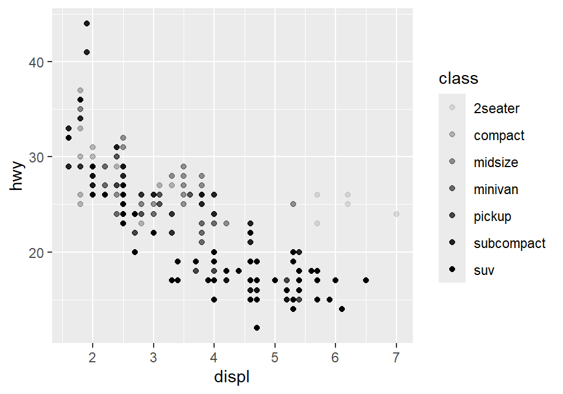
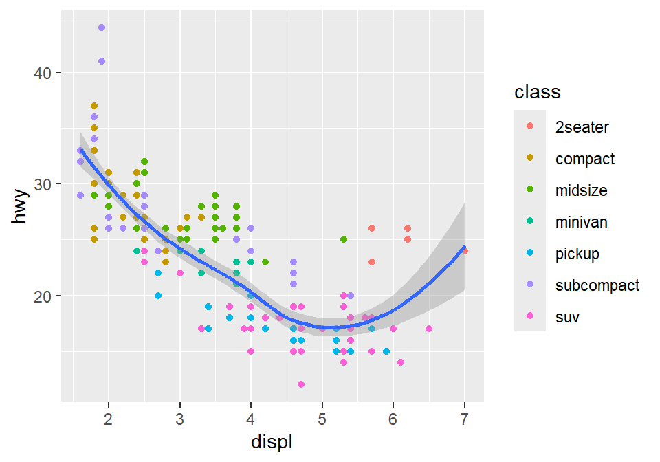
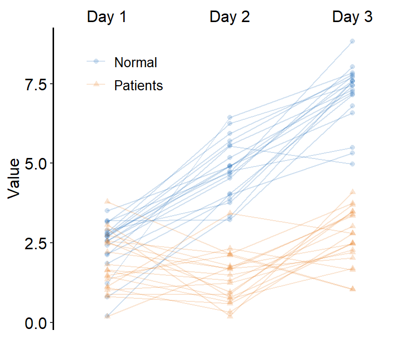
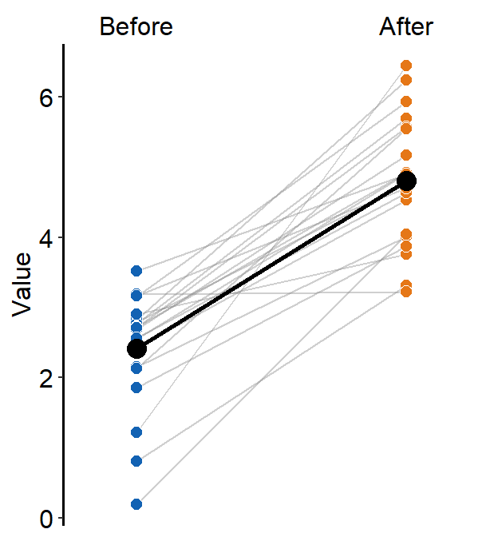
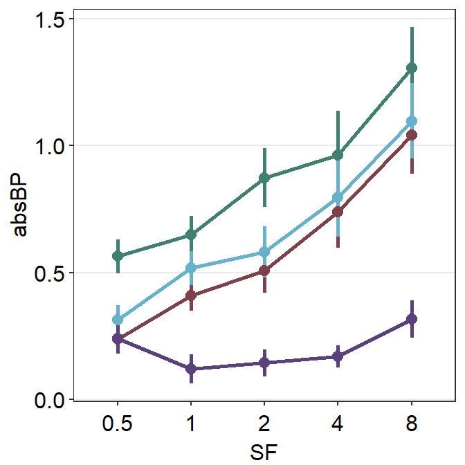
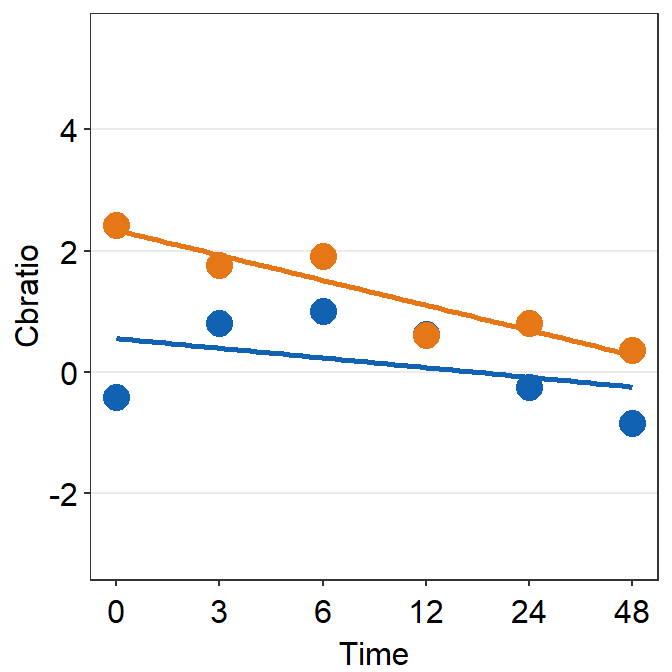

Welcome!
This book (https://smin95.com/dataviz) guides the reader to be familiar with R, a programming language, for data visualization. It also introduces the R package smplot, which aims to make the process of data visualization simple. This book was created entirely using RMarkdown for reproducibility.
Major updates on smplot
If you downloaded before May 8th, 2022, please re-download smplot. Some updates include：
sm_auc_list()has a new argumentgroups.sm_slope_list()has also been created.
install.packages("devtools")
devtools::install_github('smin95/smplot', force = TRUE)Please cite this paper when smplot is used
Seung Hyun Min, Jiawei Zhou. smplot: An R Package for Easy and Elegant Data Visualization (2021). Frontiers in Genetics, 12:802894.
For R and ggplot2 experts
Please read Chapter 4, which is a manual for smplot.
Issues and contact
If you spot any mistakes in this online book, please pull-request on Github or email me seung.min@mail.mcgill.ca. If you find issues with the ‘smplot’ package, please pull-request on Github.
License
smplot is under the MIT license. This tutorial is licensed under a Creative Commons Attribution 4.0 International License. Seung Hyun Min is the sole creator of smplot.
1 Download RStudio & Basics of R
1.1 Setting up RStudio
Why use R for data visualization?
- R is free.
- Often, less codes are needed in R to plot an elegant graph.
- for/while loops (basic concepts in programming) are not necessary in R to make a production-quality graph.
- R is the best software for statistical analysis.
Other available resources for R
- Stack Overflow: https://www.stackoverflow.com
- R for Data Science (a bible for learning R): https://r4ds.had.co.nz/
- R documentation: https://www.rdocumentation.org
- Learn Statistics with R: https://learningstatisticswithr.com/
- ggplot2 (a reference for plotting data in R): https://ggplot2-book.org/
Download requirements for RStudio
- Download R: http://cran.r-project.org/
- For Mac users: Mac: XQuartz https://www.xquartz.org/
- RStudio: http://www.rstudio.org/
Open RStudio

(#fig:pressure)Rstudio layout, image from http://www.sthda.com/english/wiki/running-rstudio-and-setting-up-your-working-directory-easy-r-programming
- Rstudio is where people do R programming.
- You can type codes (commands) into the console (bottom-left panel).
>means that the console is ready to receive more code.+means your code is not complete.
- You can also write (longer) codes in the script within the code editor (top-left panel).
- The code editor will run the script into the console.
- A new script can be opened by clicking: File -> New -> R Script.
- You can run a script by clicking ’Run” with the green arrow or by typing ctrl + enter. It is labeled with the red circle.
- Or you can just type your codes directly into the console.
Let’s make a folder and set it as working directory

(#fig:unnamed-chunk-4)Setting your working directory, image from https://www.ucl.ac.uk/~uctqiax/PUBLG100/2015/faq/setwd.html
- Create a folder named LearnR in Desktop.
- Set the folder as your working directory by clicking: Session -> Set Working Directory -> Choose Directory. Then find your LearnR folder.
- More information about setting up a directory is here: http://www.sthda.com/english/wiki/running-rstudio-and-setting-up-your-working-directory-easy-r-programming
- You will need set the directory every time you start RStudio.
1.1.1 How to run your code
You can run code in 2 ways.
First, you can type it in the script and run it after highlighting the codes you would like to run.

(#fig:unnamed-chunk-5)How to run your code - script
- Second, you can type your code directly in the console.
(#fig:unnamed-chunk-6)How to run your code - console
1.2 Basics of R
Let’s type some codes
- Capitalization, punctuations and brackets are all important.
' 'and" "mean the same.- However,
' "are not paired. So they will not work. =and<-mean equivalent.- I often use
<-.
- I often use
- Type
?when you are not sure about the code (ex.?t.test) - A code becomes comment when it is preceded by
#.- Try typing
# g = 3and see if the number gets stored in g by typing g in the console.
- Try typing
x = 3 # x equals to 3
a <- 4 # a equals to 4
d <- 'Group' # gr is equal to a character 'Group', which is not a number.
e <- "Group"
d == e # 'Group' and "Group" are equal## [1] TRUE# g = 3 # its a comment- Notice that I used
==to test if d and e are equal. Therefore,==and=mean different.==tests if two things are equal.=sets two things to be equal.d == ereturnsTRUEbecause they are both'Group'.TRUEis equivalent to 1 numerically.
- Now let’s check if x and a are equal.
x == a## [1] FALSEIt returns
FALSEbecause x and a are not equal. This is correct because 3 and 4 are not equal.FALSEequals to 0 numerically.Below are more examples showing that
TRUE= 1 andFALSE= 0.
TRUE + FALSE # 1 + 0## [1] 1TRUE + TRUE # 1 + 1## [1] 2FALSE + FALSE # 0 + 0## [1] 0TRUE*2 # 1 * 2## [1] 2TRUE*FALSE # 1 * 0## [1] 0How can I learn most effectively with the notes?
- Don’t just read it.
- Don’t just copy and paste the codes and run them in RStudio (ctrl + c & ctrl + p). Make sure you type each code.
- You can also change your code and see if it still works.
- If you are not sure of your code, you can type
?before the function. - If you are still not sure after reading the notes, check out Chapter 3 of R for Data Science: https://r4ds.had.co.nz/
More installation
- R is an old programming language.
- So, people, such as statisticians and programmers, have created more functions in R in the form of the package to update the language. They are free but they have to be downloaded separately.
- A package can contain several functions.
- In this tutorial, you will mainly be using ggplot2 package, which is elegant and flexible for visualizing data.
- Also, you will be using smplot package. It improves ggplot2 graphs visually.
- So, you will need to install some packages, such as ggplot2 and smplot. Please type the codes below.
install.packages('devtools')
devtools::install_github('smin95/smplot', force = TRUE) # requires VPN if you are in China- You only need to install them once, but you will need to reload them whenever you start a new session in RStudio using the function
library().
library(tidyverse) # it has ggplot2 package
library(cowplot) # it allows you to save figures in .png file
library(smplot)- Now let’s make some graphs in the subsequent chapters.
2 Basics of ggplot2 and Correlation Plot
Load these packages by typing the codes below.
library(tidyverse) # it has ggplot2 package
library(cowplot) # it allows you to save figures in .png file
library(smplot)2.1 Uploading data
Sample data: mpg
- I will be using an example from the book R for Data Science (https://r4ds.had.co.nz/data-visualisation.html).
- Question: Do cars with large engines use up more fuel than the those with small ones?
- Let’s open mpg, which is a data frame stored in the ggplot2 package.
- mpg contains data about cars in the US. You can type
?mpgfor more information.- displ: the size of the car’s engine in liters
- hwy: fuel efficiency. If it’s high, then the car uses less fuel per distance.
mpg## # A tibble: 234 x 11
## manufacturer model displ year cyl trans drv cty hwy fl
## <chr> <chr> <dbl> <int> <int> <chr> <chr> <int> <int> <chr>
## 1 audi a4 1.8 1999 4 auto~ f 18 29 p
## 2 audi a4 1.8 1999 4 manu~ f 21 29 p
## 3 audi a4 2 2008 4 manu~ f 20 31 p
## 4 audi a4 2 2008 4 auto~ f 21 30 p
## 5 audi a4 2.8 1999 6 auto~ f 16 26 p
## 6 audi a4 2.8 1999 6 manu~ f 18 26 p
## 7 audi a4 3.1 2008 6 auto~ f 18 27 p
## 8 audi a4 quattro 1.8 1999 4 manu~ 4 18 26 p
## 9 audi a4 quattro 1.8 1999 4 auto~ 4 16 25 p
## 10 audi a4 quattro 2 2008 4 manu~ 4 20 28 p
## # ... with 224 more rows, and 1 more variable: class <chr>- Notice that some columns and rows are not shown. You can type
View(mpg)to see the entire data frame. - Each row is an unique observation.
- Each column is an unique variable/condition.
View(mpg)2.2 Basics of ggplot2
Let’s make some graphs
- Question: Do cars with large engines use up more fuel than the those with small ones?
- To answer our question, we need to plot mpg data. The x-axis should be displ, the y-axis should be hwy.
ggplot(data = mpg) +
geom_point(mapping = aes(x = displ, y = hwy))- We find that a smaller car has a higher efficiency and that a larger car has a lower efficiency. In other words, we see a negative relationship.
How ggplot works
- When you are making a graph with ggplot2, always begin by typing the function
ggplot().- The data you want to plot is the first argument here. Ex.
ggplot(data = mpg).
- The data you want to plot is the first argument here. Ex.
- However,
ggplot(data = mpg)alone does not create a graph. You will need add (by typing +) more layers, such asgeom_point().geom_point()adds points to your graphs. You will need to specify (or map) x- and y-axes in theaes()function, which means aesthetics. This process is called mapping.- As you might expect, there are other geom functions, such as
geom_bar(),geom_boxplot(),geom_errorbar(). They plot bar graphs, boxplots and error bars, respectively.
- Here is the template for using ggplot2 (copied from R for Data Science).
ggplot(data = <DATA>) +
<GEOM_FUNCTION>(mapping = aes(<MAPPINGS>))Different color of points for each unique group
- You can apply different colors by the class of each car (each car = each row of the mpg data frame).
- Include
classvariable in theaes()function. - This maps the third variable
classinto your graph. aes()means aesthetic (ex. color, shape, etc).
- Include
ggplot(data = mpg) +
geom_point(mapping = aes(x = displ, y = hwy, color = class))
- You can also set different shapes for each group of the data.
ggplot(data = mpg) +
geom_point(mapping = aes(x = displ, y = hwy, shape = class))
- Or size or transparency (not recommended). But you get the idea. Using
aes()in a geom function (ex.geom_point()), you can label different group of points.
# different levels of transparency (alpha) for each group
ggplot(data = mpg) +
geom_point(mapping = aes(x = displ, y = hwy, alpha = class))
# different sizes of the points for each group
ggplot(data = mpg) +
geom_point(mapping = aes(x = displ, y = hwy, size = class))
Different color & shape for each group
- You can also apply different color & shape for each group of the data.
- Exercise: Try it on your own before you look at the code below.
ggplot(data = mpg) +
geom_point(mapping = aes(x = displ, y = hwy, color = class,
shape = class))
Same shape across all groups
- So far, you have put variables such as
shapeandcolorinside the functionaes().- This has enabled you to apply different shape and color for each group.
- If you put the variable for
shape,color,sizeoutside ofaes()in the geom function, then all data points will have the specifiedshape,color, etc even if they are in different groups.
ggplot(data = mpg) +
geom_point(mapping = aes(x = displ, y = hwy,
color = class), shape = 17)
- Notice that the
coloris different for each group because it is inside the functionaes(). However, all the points are triangle because we have typedshape = 17outside the functionaes(). - Exercise: try changing the shape of the points to the circle with the border.

(#fig:unnamed-chunk-23)image from http://www.sthda.com/english/wiki/ggplot2-point-shapes
Exercise: try changing the shape of the points to the circle with the border.
- When
shape = 19, the shape is the circle without the border. - When
shape = 20, the shape is the small circle without the border. - When
shape = 21, the shape is the circle with the border. - So let’s set
shapeto 21.
ggplot(data = mpg) +
geom_point(mapping = aes(x = displ, y = hwy, color = class), shape = 21)
- Notice that the border color is different for each group, but not the color that fills the circle.
- Shapes without their borders (15-20) are filled with
color. - Shapes with the border (21-24) are filled with
filland its border colored withcolor. - So let’s change
color = Classtofill = Class.
ggplot(data = mpg) +
geom_point(mapping = aes(x = displ, y = hwy, fill = class), shape = 21)
How do we draw the best-fit line of the graph?
- Here is our graph.
ggplot(data = mpg) +
geom_point(mapping = aes(x = displ, y = hwy))
- There seems to be a negative relationship.
- How do we draw the best-fit line of the graph’s negative relationship?
- Use another geom function
geom_smooth().
ggplot(data = mpg) +
geom_smooth(mapping = aes(x = displ, y = hwy))## `geom_smooth()` using method = 'loess' and formula 'y ~ x'
geom_point() + geom_smooth()
- Now let’s combine geom_point() + geom_smooth() into one graph.
ggplot(data = mpg) +
geom_point(mapping = aes(x = displ, y = hwy)) +
geom_smooth(mapping = aes(x = displ, y = hwy))## `geom_smooth()` using method = 'loess' and formula 'y ~ x'
ggplot()acts as a system where you can add multiplegeomobjects, such asgeom_point()andgeom_smooth().- You can add multiple layers of geom in a single plot, like shown here.
ggplot()and at least one geom function are necessary to draw a graph.ggplot()alone does not draw a graph. Try it on your own.
ggplot(data = mpg)
Writing shorter codes
ggplot(data = mpg) +
geom_point(mapping = aes(x = displ, y = hwy)) +
geom_smooth(mapping = aes(x = displ, y = hwy))- Notice that we have typed
mapping = aes(x = displ, y = hwy)twice. This is repetitive. - If you type the
mappingargument inggplot(), you won’t need to type them anymore in the subsequentgeomfunctions.
ggplot(data = mpg, mapping = aes(x = displ, y = hwy)) +
geom_point() +
geom_smooth()## `geom_smooth()` using method = 'loess' and formula 'y ~ x'
This is exactly the same as the previous graph. In both cases, the mapping has been set so that the x-axis is
displand the y-axis ishwyin bothgeom_point()andgeom_smooth().Now let’s apply different color of points and the fit the line for each group.
ggplot(data = mpg, mapping = aes(x = displ, y = hwy, color = class)) +
geom_point() +
geom_smooth()## `geom_smooth()` using method = 'loess' and formula 'y ~ x'
- Okay, this is extremely messy and probably a bad idea.
- You might have gotten
warningsbut you can usually ignore them.
- You might have gotten
- Let’s plot the best-fit line across all groups (i.e., one best-fit line) but apply different color for each class (i.e., many colors).
- To do so, type
color = classin geom_point, notggplot(). This enables you to specify that you will apply different color for each class only ingeom_point()but not ingeom_smooth().
ggplot(data = mpg, mapping = aes(x = displ, y = hwy)) +
geom_point(aes(color = class)) +
geom_smooth()## `geom_smooth()` using method = 'loess' and formula 'y ~ x'
2.3 Improve Data Visualization using smplot
- Although the default theme of ggplot2 graphs is clean, there are some things that I do not like:
- The fonts are too small.
- The grey background is distracting.
- There are too many grids.
ggplot(data = mpg, mapping = aes(x = displ, y = hwy, color = class)) +
geom_point() 
- Let’s make this graph prettier by using functions from smplot.
- In this example, let’s use
sm_corr_theme(). I’ve made this function as a theme suitable for correlation plots. - Disclaimer: smplot package has been built based on my preference.
- smplot is not necessary to make a ggplot graph or change its style. It is possible to change every aspect of the graph with ggplot2 but this requires about 8-20 lines of codes (based on my experience). Instead, smplot function does so in one line of code.
- In this example, let’s use
ggplot(data = mpg, mapping = aes(x = displ, y = hwy, color = class)) +
geom_point() +
sm_corr_theme()- Now let’s remove the border within
sm_corr_theme()by settingborders = FALSE.
ggplot(data = mpg, mapping = aes(x = displ, y = hwy, color = class)) +
geom_point() +
sm_corr_theme(borders = FALSE)
- Exercise: You can also set
borders = TRUEand see what happens.
ggplot(data = mpg, mapping = aes(x = displ, y = hwy, color = class)) +
geom_point() +
sm_corr_theme(borders = TRUE)You might notice that borders come back. This is exactly what happens when you do not include
bordersargument insm_corr_theme(). This is becausesm_corr_theme()is set toborders = TRUEas default.I think the one with the border looks better.
You can also remove the legend by setting
legends = FALSEinsm_corr_theme().
ggplot(data = mpg, mapping = aes(x = displ, y = hwy, color = class)) +
geom_point() +
sm_corr_theme(legends = FALSE)- Exercise Set
legends = TRUEand see what happens. Type?sm_corr_themeto see why legends appear without directly writinglegends = TRUE.
ggplot(data = mpg, mapping = aes(x = displ, y = hwy, color = class)) +
geom_point() +
sm_corr_theme(legends = TRUE)- However, in this case, I think we need a legend because there are many classes.
Positive relationship between x- and y-axes
- Let’s plot another scatterplot using mtcars data.
- Set the x-axis with drat and y-axis with mpg.
- Since you are making a scatterplot, you will need to use
geom_point(). - Set the size of all points to 3 by typing
size = 3. - Set the shape of all points to the circle with a border by typing
shape = 21. - Set the filled color of all points to green by typing
fill = '#0f993d'. - Set the border color to white by typing
color = 'white'.- Since
shape = 21refers to the circle with a border,fillis the color that fills the points andcoloris the border color.
- Since
ggplot(data = mtcars, mapping = aes(x = drat, y = mpg)) +
geom_point(shape = 21, fill = '#0f993d', color = 'white',
size = 3) 
drat and mpg have a positive relationship.
Now let’s make it pretty by adding
sm_corr_theme().
ggplot(data = mtcars, mapping = aes(x = drat, y = mpg)) +
geom_point(shape = 21, fill = '#0f993d', color = 'white', size = 3) +
sm_corr_theme()
- You can remove borders too by setting
borders = FALSEinsm_corr_theme().
ggplot(data = mtcars, mapping = aes(x = drat, y = mpg)) +
geom_point(shape = 21, fill = '#0f993d', color = 'white', size = 3) +
sm_corr_theme(borders = FALSE)
Reporting statistics from a paired correlation
- smplot also offers a function that plots the best-fit line of a scatterplot (i.e., correlation plot) and prints statistical values, such as p- and R-values.
- p-value is used to check for statistical significance. If it’s less than 0.05, its regarded as statistically significant. However, it gets smaller with a larger sample size.
- R-value (correlation coefficient) measures the strength and the direction of the correlation. It ranges from -1 to 1. It does not depend on the sample size.
- Let’s add a function
sm_statCorr(). The statistical results are from Pearson’s correlation test.
ggplot(data = mtcars, mapping = aes(x = drat, y = mpg)) +
geom_point(shape = 21, fill = '#0f993d', color = 'white', size = 3) + sm_corr_theme() +
sm_statCorr()## `geom_smooth()` using formula 'y ~ x'
- I don’t really like how the line color is different from that of the points. Let’s change the color to green.
- Also let’s get results from Spearman’s correlation test rather than from Pearson’s.
- To do so, type
corr_method = 'spearman'in the functionsm_statCorr(). You will get a different R value from 0.68, which is from Pearson’s correlation test.
- To do so, type
ggplot(data = mtcars, mapping = aes(x = drat, y = mpg)) +
geom_point(shape = 21, fill = '#0f993d', color = 'white', size = 3) +
sm_corr_theme() +
sm_statCorr(color = '#0f993d', corr_method = 'spearman')## `geom_smooth()` using formula 'y ~ x'
- Exercise: Set
corr_method = 'pearson'and see what happens.
ggplot(data = mtcars, aes(x = drat, y = mpg)) +
geom_point(shape = 21, fill = '#0f993d', color = 'white', size = 3) +
sm_corr_theme() +
sm_statCorr(color = '#0f993d', corr_method = 'pearson')You will see that this is exactly the same as when
corr_methodargument is not included insm_statCorr(). In short, the default correlation method forsm_statCorr()is'pearson'. So, if you don’t write anything forcorr_method, it will give results from Pearson’s correlation test. Type?sm_statCorrto see the default ofline_type.#0f993dis a specific green that I like.Now, let’s change the color. Replace
'#0f993d'with'green'ingeom_point()andsm_statCorr.- This
'green'is the default green color of R.
- This
ggplot(data = mtcars, mapping = aes(x = drat, y = mpg)) +
geom_point(shape = 21, fill = 'green', color = 'white', size = 3) + sm_corr_theme() +
sm_statCorr(color = 'green')## `geom_smooth()` using formula 'y ~ x'
- Which one do you prefer?
fill = '#0f993d' vs fill = 'green'
- I personally like
#0f993dmore. However, R does not recognize this color asgreen. - So how are you supposed to remember the color code?
- You do not have to. You can type
sm_color('green')instead. This is a function from the smplot package. sm_color()accepts the name of the color. If you want to get the hex codes (color codes) for red and green, typesm_color('red','green').
sm_color('red','green')- Again,
sm_color()has been built based on my preference. So it returns the hex codes of colors that I use most often. - There are many more color themes that are available in R. For more information, please check out Chapter 28 of R for Data Science (https://r4ds.had.co.nz/graphics-for-communication.html).
ggplot(data = mtcars, mapping = aes(x = drat, y = mpg)) +
geom_point(shape = 21, fill = sm_color('green'), color = 'white',size = 3) +
sm_corr_theme() +
sm_statCorr(color = sm_color('green'))## `geom_smooth()` using formula 'y ~ x'
- Exercise Change the color of the points and the best-fit line to
blueusingsm_color(). If you want to see all the color options forsm_color(), type?sm_color. There are 16 colors total.
ggplot(data = mtcars, mapping = aes(x = drat, y = mpg)) +
geom_point(shape = 21, fill = sm_color('blue'), color = 'white',size = 3) +
sm_corr_theme() +
sm_statCorr(color = sm_color('blue'))Different color for each group but with other colors
- Let’s go back to the mpg data. Set the x-axis with displ and y-axis with hwy. Then make a scatterplot using
geom_point().- Set the size of the points to 2 across all groups. So type
size = 2outside ofaes()ingeom_point().
- Set the size of the points to 2 across all groups. So type
- Let’s apply different color for each
classof the cars by writingcolor = classinaes()fromggplot().fill = classis needed when the shape of the point is set to 21-25.
ggplot(data = mpg, mapping = aes(x = displ, y = hwy, color = class)) +
geom_point(size = 2)
- To use other colors, we could use a function from ggplot2 called
scale_color_manual().scale_fill_manual()is used when the shape of the point has borders (shape = 21-25).
- To find how many colors we need total, we need to find how many groups exist.
unique_classes <- unique(mpg$class)- In R, you can extract data from one column by using
$. You can try it with different variables too. unique()returns unique values in the selected data.- Then compute the number of unique values using
length()function.
number_of_classes <- length(unique_classes)
number_of_classes## [1] 7sm_paletteaccepts the number of colors as input. It returns colors that I use most often.- Now that we know we need 7 colors total, we can type
sm_palette(7)orsm_palette(number_of_classes)forvaluesinscale_color_manual().
ggplot(data = mpg, mapping = aes(x = displ, y = hwy, color = class)) +
geom_point(size = 2) +
scale_color_manual(values = sm_palette(number_of_classes)) +
sm_corr_theme()
- Let’s store this graph using a variable called
figure1.
figure1 <- ggplot(data = mpg, mapping = aes(x = displ, y = hwy, color = class)) +
geom_point() +
scale_color_manual(values = sm_palette(number_of_classes)) +
sm_corr_theme()- Notice that when you store a figure into a variable, the figure is not displayed when you run the code that makes the figure, ex.
figure1 <- ggplot(data = mpg, mapping = .... To display the figure, please type the variable name in the console.
figure1 # it will appear again by calling this variable Let’s save the plot as an image in your folder LearnR by using the variable figure1.
- To save the figure as an image, we will use a function from the cowplot package.
- The function is
save_plot(). - There is one important argument:
base_asp.- This is the ratio of your image (width/height). I usually set it to 1.4. So let’s type
base_asp = 1.4insave_plot(). - If
base_aspis larger than 1, it gets wider than its height. This is recommended when you have a legend. - If there is no legend, then
base_asp = 1is recommended.
- This is the ratio of your image (width/height). I usually set it to 1.4. So let’s type
save_plot('figure1.png', figure1, base_asp = 1.4)- Exercise: try to save it again with a name figure1b.png by typing:
save_plot('figure1b.png', figure1)How’s the picture? Why does it look different? Type
?save_plotto see what the defaultbase_aspis.Done! The graph (in png file) should be in your LearnR folder.
Exercise: Try to open Microsoft Word or PowerPoint and upload figure1. The figure should look the same as it appears in the slides.
Exercise: Remove the legend and save the scatterplot with
base_asp = 1.Congratulations! You can now make correlation plots with R.
2.4 Summary
- You have learned the basics of ggplot.
- You begin by writing a
ggplot()function. - If aesthetics (color, shape, etc) are specified outside of
aes()function, then there is no group difference. - If aesthetics are specified in
aes(), different groups of data will have different looks. - You have learned to add geom layers such as
geom_point(), which shows points, andgeom_smooth(), which plots the best-fit function. - You have learned to plot
geom_point()andgeom_smooth()in the same graph.
- You begin by writing a
- smplot functions can be used to improve ggplot2 visually.
- For correlation plots, add
sm_corr_theme(). - You can report statistical results and plot linear regression from correlation by
sm_statCorr(). - You can also select colors using
sm_color().
- For correlation plots, add
- Save the graph as an image file in your working directory.
- Working directory has to be set in RStudio (Session -> Set Working Directory -> Choose Directory)
- Then use
save_plot()from cowplot to save the image in your directory (folder LearnR).
3 Boxplot and Violin Plot
Load these packages by typing the codes below.
library(tidyverse) # it has ggplot2 package
library(cowplot) # it allows you to save figures in .png file
library(smplot)3.1 Upload Sample Data (csv file) in RStudio
Download requirements
- Download data.csv from https://www.smin95.com/data.csv
- Put the file data.csv in your LearnR folder
Before we get started
- Set LearnR folder as your working directory by by clicking: Session -> Set Working Directory -> Choose Directory. Then find your LearnR folder.
- Load these three packages with the
library()function: ggplot2, cowplot and smplot.- Since the tidyverse package includes the ggplot2 package, you can load tidyverse instead. tidyverse has other packages beside ggplot2, so it is more useful.
- Remember from the last tutorial that:
- Functions from the ggplot2 package include
ggplot()and other geom functions such asgeom_point(),geom_smooth(), etc. - Functions from the smplot package improve the ggplot2 graphs visually. However, they are not required to make a graph using ggplot2.
- The cowplot package has a function called
save_plot, which is very useful for saving a graph as an image.
- Functions from the ggplot2 package include
data.csv
- Let’s load data.csv in R from your LearnR folder.
- Then store the loaded data into a variable called
df. - We will use a function from the tidyverse package called read_csv().
- For more information, type
?read_csv().
- For more information, type
df <- read_csv('data.csv')## Rows: 90 Columns: 3
## -- Column specification --------------------------------------------------
## Delimiter: ","
## chr (2): Subject, Day
## dbl (1): Value
##
## i Use `spec()` to retrieve the full column specification for this data.
## i Specify the column types or set `show_col_types = FALSE` to quiet this message.If you get an error such as
object 'data.csv' not found, make sure you set your working directory in the LearnR folder. Also make sure you have downloaded your data and saved it in the LearnR folder.You can view the entire data frame by typing
View(df).
View(df)- There are three columns in df.
- The first column (Subject) is the subject number. S1 means the first subject, and S2 second.
- The second column (Value) is the data. It contains numbers.
- The third column (Day) is the day of testing. There are three days of measurement: One, Two and Three.
- What is the data about?
- 30 patients were tested across three days to see if there was an improvement in their visual function (Value). The higher value, the better the vision.
- Day One: first day of the study. This is the baseline value. After this measurement, patients received treatment (ex. drug, surgery, etc).
- Day Two: second day of the study. This is the one day after receiving the treatment.
- Day Three: third day of the study. This is two days after receiving the treatment.
- The data are all fake.
read_csv('data.csv')
Let’s use the variable df to store the output from data.csv.
df is shortened from data frame, which refers to a structure of the data that is commonly used for data analysis.
In fact, ‘data.csv’ has the structure of a typical data frame.
- Each column is a variable.
- Each row represents an observation
In future, I suggest you save data that has a similar structure to that of df.
- Put your own data in Microsoft Excel and save it as a csv file to load it on R.
Exercise: Open data.csv using Microsoft Excel. Change the name of third column into Group. Then, save it as data2.csv. What does this data frame indicate now?
- It indicates there are 30 individuals for each group. Also, there are 3 groups, so there are 90 individuals total. So, it might be better to change the subject number so each person has a unique label, such as S1 to S90.
Best way to plot data
- A popular way to visualize data is plotting a bar graph.
- However, a bar graph does not show the distribution of the data well.
- For this reason, boxplot and violin plots have become more popular in scientific writing.
3.2 Boxplot
What is a boxplot?
- This is the basic structure of the boxplot.
- The line in the middle is the median of the data.
- The first quartile is the lower 25% of the data.
- The third quartile is the 75% percentile of the data.
- The interquartile range is the distance between the first and third quartiles.
- The lower whisker is the lowest data point without outliers.
- The upper whisker is the highest data point without outliers.
- The point that lies outside the whisker is the outlier.
Boxplot vs bar graph
- Here is the basic structure of the bar graph.

- The boxplot is more informative than bar graph.
- The bar graph only shows the mean (average) of the data and the standard error.
- The bar graph does not represent the distribution very well. The narrow errorbar is quite misleading here.
- For this reason, let’s focus on drawing a boxplot.
Boxplot using ggplot2
- We want to plot Value (y-axis) from each Day (x-axis).
- As always in ggplot, let’s start by writing
ggplot().- Make sure you specify the data to plot by writing
data = dfinggplot().
- Make sure you specify the data to plot by writing
- Also, you will need to specify the x- and y-axes in the
mappingargument withinggplot().x = Dayandy = Value.
ggplot(data = df, mapping = aes(x = Day, y = Value))- However, as we learned in the last lesson, ggplot requires geom objects to plot something. Last time we used geom_point(), which plots points.
- Now, let’s use geom_boxplot() to plot a boxplot.
ggplot(data = df, mapping = aes(x = Day, y = Value)) + geom_boxplot()- Here’s the boxplot! But I think there is a problem here.
- Day Three precedes Day Two in the x-axis.
- Exercise: Why do you think Three appeared first?
Problem: Alphabetical order
- The issue with the boxplot is that the x-axis followed an alphabetical order.
- Th precedes Tw. In short, R does not seem to know that we want the order to be One -> Two -> Three.
- R decided to follow the alphabetical order is because the column Day is shown as
<chr>, which means character.
df## # A tibble: 90 x 3
## Subject Value Day
## <chr> <dbl> <chr>
## 1 S1 -0.752 One
## 2 S2 0.220 One
## 3 S3 -1.00 One
## 4 S4 1.91 One
## 5 S5 0.395 One
## 6 S6 -0.985 One
## 7 S7 0.585 One
## 8 S8 0.886 One
## 9 S9 0.691 One
## 10 S10 -0.366 One
## # ... with 80 more rows- Note that the Subject column is also considered as
<chr>(characters) because it contains texts/alphabets. - The Value column is categorized as
<dbl>, which means double.- Double basically means numbers.
- In R, character is also referred to as string. They mean the same thing.
- Here are more examples of characters/strings.
a <- 'R is very useful!'
b <- 'Dogs are so cute.'
c <- 'Clarinet is the best.'- In these examples, you have stored the characters/strings in the variables a, b and c.
Displaying characters in a non-alphabetical order
Factors are important when you want to display characters in non-alphabetical order.
Factors are variables that have a limited number of different values.
For example, if a dataset has two groups (controls and patients), these can be referred to as factors.
However, when you are using
read_csv()to load data into RStudio,read_csv()will interpret texts/alphabets as characters, not factors.- This is a problem when you need a non-alphabetical order, such as one -> two -> three and Jan -> Feb -> Mar -> Apr.
To resolve this problem, you will need to change the characters into factors using
factor()function.
df$Day <- factor(df$Day, levels = c('One','Two','Three'))- Remember that
<-means equivalent. - Also,
$of a data frame can extract a specific column- You can also type
df$Valueand run it to see what happens. You will get all values of the second column Value.
- You can also type
df$Value- By using
factor(), you are making the Day column of df into factor from character. - However, you will need to store the factored version of
df$Dayby using<-. If not,df$Daywill stay as character. levelsargument infactor()allows you to specify the order of the factors.- For more information about factors, please check Chapter 15 of R for Data Science (https://r4ds.had.co.nz/factors.html).
- Note: you do not have to understand this part 100%. However, if you do encounter similar issues, I suggest you resolve it with the solution above.
Double-check if the ‘Day’ column is factor
- Let’s open the data frame df again.
df## # A tibble: 90 x 3
## Subject Value Day
## <chr> <dbl> <fct>
## 1 S1 -0.752 One
## 2 S2 0.220 One
## 3 S3 -1.00 One
## 4 S4 1.91 One
## 5 S5 0.395 One
## 6 S6 -0.985 One
## 7 S7 0.585 One
## 8 S8 0.886 One
## 9 S9 0.691 One
## 10 S10 -0.366 One
## # ... with 80 more rows- Now we see
<fct>in the Day column. This means that the column is now factor, not character.
Back to boxplot using ggplot2
- Now let’s draw the boxplot again.
ggplot(data = df, mapping = aes(x = Day, y = Value)) + geom_boxplot()
- Since we have converted the Day column of df into factor, the boxplot successfully plots each day in the correct order.
A boxplot with individual data
Sometimes, it is preferable to plot individual data on top of the boxplot.
There are many ways to do this. Here is a simple solution by using
geom_jitter(). For more information, type?geom_jitter.
ggplot(data = df, mapping = aes(x = Day, y = Value)) + geom_boxplot() +
geom_jitter()
- I think the points are too spread. So let’s set the
widthof the spread ingeom_jitter()to 0.15. - Also, let’s apply a different color of points for each Day.
ggplot(data = df, mapping = aes(x = Day, y = Value, color = Day)) +
geom_boxplot() +
geom_jitter(width = 0.15)
- Now we can make the boxplot prettier with
sm_minimal(), which removes all grids in the graph. We can also setlegends = FALSEto remove the legends. - Let’s also add a title Visual improvement after treatment using
ggtitle(), which is a function from the ggplot2 package.
ggplot(data = df, mapping = aes(x = Day, y = Value, color = Day)) +
geom_boxplot() +
geom_jitter(width = 0.15) +
sm_minimal(legends = FALSE) +
ggtitle('Visual improvement after treatment')- Now let’s set the colors using
sm_palette(). Remember from the last lesson that we set the colors in ggplot by usingscale_color_manual()for points without borders. - Let’s write
3insm_palette()because we need 3 colors (for each Day).
ggplot(data = df, mapping = aes(x = Day, y = Value, color = Day)) +
geom_boxplot() +
geom_jitter(width = 0.15) +
sm_minimal(legends = FALSE) +
ggtitle('Visual improvement after treatment') +
scale_color_manual(values = sm_palette(3))- If you need horizontal grids, you can simply replace
sm_minimal()withsm_hgrid(). There is alsosm_vgrid()but I will not try it here because it is not so useful in our context.
ggplot(data = df, mapping = aes(x = Day, y = Value, color = Day)) +
geom_boxplot() +
geom_jitter(width = 0.15) +
sm_hgrid(legends = FALSE) +
ggtitle('Visual improvement after treatment') +
scale_color_manual(values = sm_palette(3))
geom_boxplot() vs sm_boxplot()
geom_boxplot()does not show individual data. You need to addgeom_jitter().sm_boxplot()shows both a boxplot and individual data.- It automatically uses
sm_hgrid().
- It automatically uses
ggplot(data = df, mapping = aes(x = Day, y = Value, color = Day)) +
sm_boxplot() +
ggtitle('Visual improvement after treatment') +
scale_color_manual(values = sm_palette(3))
- Let’s keep the color of the boxplot the same across Day. So we should remove
color = Dayinaes().- However, since the shape is 16 (circle without borders), this will cause the points across Day to have the same color too.
- So let’s change the shape of the points to 21, which is a circle with borders.
- So
filldecides the filling color now. Let’s setfill = Dayinaes(). - Also,
colorhere only affects the border color. Let’s set it towhite.
- So
- Make sure you change
scale_color_manual()toscale_fill_manual().
ggplot(data = df, mapping = aes(x = Day, y = Value, fill = Day)) +
sm_boxplot(shape = 21, color = 'white') +
ggtitle('Visual improvement after treatment') +
scale_fill_manual(values = sm_palette(3))
- Now, pick your favorite boxplot and store it in a variable called my_boxplot using
<-.
my_boxplot <- ggplot(data = df, mapping = aes(x = Day, y = Value, fill = Day)) +
sm_boxplot(shape = 21, color = 'white') +
ggtitle('Visual improvement after treatment') +
scale_fill_manual(values = sm_palette(3))Save boxplot
- We can save the boxplot by using
save_plot()from the cowplot package. - Let’s set the aspect ratio (width/height) to 1. So, type
base_asp = 1.
save_plot('boxplot.jpg', my_boxplot, base_asp = 1)- This image file should now be in your LearnR folder.
3.3 Violin Plot
- The boxplot represents the distribution quite well but it can still be misleading.
- Also, it can be visually overwhelming (i.e., too crowded) to some readers.
- So, researchers have begun favoring the violin plot more.
Structure of the violin plot

- The part in the middle is the widest because it has most points. This part has the highest point density.
- The lower and upper ends of the violin plot are thinner because there are less points.
- Let’s draw a violin plot in R.
Violin plot with ggplot2
- Let’s draw the violin plot. Specify the x-axis to Day and the y-axis to Value using data frame df.
ggplot(data = df, mapping = aes(x = Day, y = Value)) + geom_violin()- Notice that since we have already converted the Day column of df into factor, the violin plot’s x-axis is in the correct order.
- Also, notice that we can just replace
geom_boxplot()withgeom_violin().
Violin plot with individual points
- Let’s add individual points to the violin plot by using
geom_jitter().- Set
widthof the spread to0.15.
- Set
ggplot(data = df, mapping = aes(x = Day, y = Value)) +
geom_violin() +
geom_jitter(width = 0.15)
- Now let’s apply different color to each Day like we did in boxplot by using
scale_color_manual().- Let’s use
sm_palette(3).
- Let’s use
ggplot(data = df, mapping = aes(x = Day, y = Value, color = Day)) +
geom_violin() +
geom_jitter(width = 0.15) +
scale_color_manual(values = sm_palette(3))
- Finally, let’s make it pretty and remove the legend by applying
sm_hgrid()theme, which only has horizontal grids. - Let’s also add a title Visual improvement after treatment using
ggtitle().
ggplot(data = df, mapping = aes(x = Day, y = Value, color = Day)) +
geom_violin() +
geom_jitter(width = 0.15) +
scale_color_manual(values = sm_palette(3)) +
sm_hgrid() +
ggtitle('Visual improvement after treatment')
geom_violin() vs sm_violin()
geom_violin()does not show individual data. You need to add geom_jitter().sm_violin()shows both a boxplot and individual data.- It automatically uses
sm_hgrid(). - It also display lines that represent the mean and +/- standard deviation.
- It automatically uses
- In
sm_violin(), the default shape ('point_shape') is 16, which is the circle without borders. - Let’s try using
sm_violin(). colorhere filling color of the jittered points. Also,coloraffects the color of the lines that show the mean and +/- standard deviation.- Let’s set
color = Dayinaes()so that we can apply different colors of the lines and the points for each group. - Make sure you have
scale_color_manual().
ggplot(data = df, mapping = aes(x = Day, y = Value, color = Day)) +
sm_violin() +
scale_color_manual(values = sm_palette(3)) +
ggtitle('Visual improvement after treatment')Save your violin plot
- Pick your violin plot and store it in a variable called
my_violinusing<-.
my_violin <- ggplot(data = df, mapping = aes(x = Day, y = Value, color = Day)) +
sm_violin() +
scale_color_manual(values = sm_palette(3)) +
ggtitle('Visual improvement after treatment')- We can save the violin plot by using
save_plot()from the cowplot package. - Let’s set the aspect ratio (width/height) to 1. So, type
base_asp = 1.
save_plot('violin.jpg', my_violin, base_asp = 1)- This image file should now be in your LearnR folder.
3.4 Summary
- You have learned how to convert characters to factors.
- Factor is important to order words/letters in a non-alphabetical order.
- You can now make a boxplot and a violin plot with R.
- They are more informative than a bar graph.
- You have learned to use geom functions, such
geom_boxplot(),geom_violin(), andgeom_jitter().- These are functions from the ggplot2 package.
- You can also plot individual data at the same time with functions from the smplot package.
- These functions are
sm_boxplot()andsm_violin().
- These functions are
4 Manual and Examples of smplot
This chapter is a manual for smplot; it includes numerous examples. It also includes tutorials about sm_bar(), sm_bland_altman() and sm_raincloud(), all of which are not mentioned in the preceding chapters. However, this chapter does not describe sm_effsize(), sm_power() and sm_common_axis(); these functions are described in Chapters 5-7.
- If you are not sure about any of the functions, please type
?before the function names, ex.?sm_bar.
4.1 Installation of the Package
- The smplot package is NOT available on CRAN yet. So, you will need to download it directly from my github for now.
- To install it, please type in the R console:
install.packages('devtools')
devtools::install_github('smin95/smplot')- To use the package, load it:
library(smplot)What is smplot?
- smplot is a package that provides functions that visually improve graphs produced from ggplot2.
- So it does not work with plots made from base R.
- It was first developed in May 2021.
- It is free and open source (https://github.com/smin95/smplot).
4.2 smplot’s Color Palette and Graph Themes
smplot’s color palette
- Its color palette can be accessed via two functions:
sm_color()andsm_palette(). sm_color()accepts the character string of the color name.sm_palette()accepts the number of colors (up to 20) and returns the hex codes accordingly.

(#fig:unnamed-chunk-91)smplot’s color palette
- For example, if you want
blueandred, just type the input like this:
sm_color('blue','red')## [1] "#1262b3" "#cc3d3d"- But, do not form a single vector that contains two characters. If so,
sm_color()will only return the first color.
sm_color(c('blue','red'))## Warning in if (color == "blue") return("#1262b3"): the condition has
## length > 1 and only the first element will be used## [1] "#1262b3"- If you need 5 colors, you can use
sm_palette().
sm_palette(5)## [1] "#cc1489" "#1262b3" "#5b4080" "#e57717" "#0f993d"smplot’s graph themes
- There are several its graph themes. The text positions and the font are all similar.
sm_corr_theme()andsm_hvgrid()are equivalent. They have major horizontal and vertical grids.- This theme is useful for correlation, so I created a duplicate function
sm_corr_theme().
- This theme is useful for correlation, so I created a duplicate function
sm_bar_theme()andsm_hgrid()are equivalent. They have major horizontal grids.- This theme is useful for a bar graph, so I created a duplicate function
sm_bar_theme().
- This theme is useful for a bar graph, so I created a duplicate function
sm_minimalhas no major grid. This is useful when a graph has a lot of annotation, such as texts and arrows.sm_slope_theme()is a theme for a slope chart. It removes everything except the y-axis.- All of these functions, except for
sm_slope_theme(), have two arguments:bordersandlegends.- For some of these functions, the defaults are set to
borders = TRUEandlegends = TRUE. - You can check the defaults by typing
?in front of the function. Ex:?sm_corr_theme - There is no option for
bordersinsm_slope_theme().
- For some of these functions, the defaults are set to
p1has the default theme of ggplot2.
library(tidyverse)
p1 <- ggplot(data = mpg, mapping = aes(x = displ, y = hwy, color = class)) +
geom_point(size = 2)
p1
- Now we can change the theme using
sm_corr_theme().
p1 + sm_corr_theme()
- We can also remove
bordersandlegendsby setting them asFALSE.
p2 <- p1 + sm_corr_theme(borders = FALSE, legends = FALSE)
p2
- You can also apply smplot’s colors by using
scale_color_manual().
p2 + scale_color_manual(values = sm_palette(7))
4.3 Correlation Plot
sm_corr_theme()andsm_statCorr()can be used as a pair when plotting a correlation.This is the plot using the default theme of ggplot2.
p1 <- ggplot(data = mtcars, mapping = aes(x = drat, y = mpg)) +
geom_point(shape = 21, fill = sm_color('green'), color = 'white', size = 3)
p1
- The next plot uses
sm_corr_theme()to apply the smplot’s theme andsm_statCorr()to print linear regression slope and statistical results from a paired correlation test (Pearson’s). - Important:
sm_statCorr()recognizes the data for the y- and x-axes from themapping = aes()inggplot()function.- There is no
mappingargument insm_statCorr().
- There is no
p1 + sm_corr_theme() +
sm_statCorr(color = sm_color('green'))
- You can also change the
line_typeto'solid'insm_statCorr(), and change the location of the printed texts by usinglabel_xandlabel_yarguments. - You can also change the font size of the printed texts by setting
text_sizeto a larger numerical value.
p1 + sm_corr_theme() +
sm_statCorr(color = sm_color('green'),
line_type = 'solid',
label_x = 3.5,
label_y = 30,
text_size = 5)
4.3.1 Data frame for a correlation plot
Column 1 has to be the data for x-axis.
Column 2 has to be the data for y-axis.
This structure of the data frame is slightly different from that is typically used in ggplot2 and smplot functions (ex.
sm_boxplot(),sm_bar(),sm_violin()andsm_raincloud()).Correlation plot and a bar plot requires a different data frame structure.
# Example
set.seed(11) # generate random data
method1 = c(rnorm(19,0,1),2.5)
method2 = c(rnorm(19,0,1),2.5)
Subject <- rep(paste0('S',seq(1:20)), 2)
Data <- data.frame(Value = matrix(c(method1,method2),ncol=1))
Method <- rep(c('Method 1', 'Method 2'), each = length(method1))
df_general <- cbind(Subject, Data, Method) # used for sm_bar(), sm_boxplot(), sm_violin(), etc
df_corr <- data.frame(first = method1, second = method2) # used for correlation- We have created two data frames:
df_generalanddf_corr. Let’s take a look at their structures.
head(df_general)## Subject Value Method
## 1 S1 -0.59103110 Method 1
## 2 S2 0.02659437 Method 1
## 3 S3 -1.51655310 Method 1
## 4 S4 -1.36265335 Method 1
## 5 S5 1.17848916 Method 1
## 6 S6 -0.93415132 Method 1- Notice that
df_generalhas three columns. The first column is subject, second column is data (i.e.,Value) and third column is measurement group.
head(df_corr)## first second
## 1 -0.59103110 -0.65571812
## 2 0.02659437 -0.68251762
## 3 -1.51655310 -0.01585819
## 4 -1.36265335 -0.44260479
## 5 1.17848916 0.35255750
## 6 -0.93415132 0.07317058- Notice that
df_corrhas two columns, each of which represents a measurement group.
# correlation plot using data frame 'df_corr'
ggplot(data = df_corr, mapping = aes(x = first, y = second)) +
geom_point(shape = 21, fill = sm_color('crimson'), color = 'white',
size = 3) + sm_corr_theme(borders = FALSE) +
scale_y_continuous(limits = c(-2.5,2.5)) +
scale_x_continuous(limits = c(-2.5,2.5)) +
sm_statCorr(color = sm_color('crimson'), corr_method = 'pearson',
label_x = -2.2, label_y = 2.3) +
ggtitle('Correlation plot') +
xlab('Method 1') + ylab('Method 2') # bar graph using data frame 'df_general'
ggplot(data = df_general, mapping = aes(x = Method, y = Value, fill = Method)) +
sm_bar(shape = 21, color = 'white', bar_fill_color = 'gray80') +
scale_fill_manual(values = sm_color('crimson','green'))
4.3.2 Correlation plot with both regression and reference lines
- You can also add a reference line (slope = 1) in a correlation plot.
- This can be done with
geom_abline(). In this example, the reference line’s slope is set to 1 and it has a dashed line style.
# correlation plot using data frame 'df_corr'
ggplot(data = df_corr, mapping = aes(x = first, y = second)) +
geom_point(shape = 21, fill = sm_color('crimson'), color = 'white',
size = 3) + sm_corr_theme(borders = FALSE) +
geom_abline(slope = 1, linetype = 'dashed') +
scale_y_continuous(limits = c(-2.8,2.8), expand = c(0,0)) +
scale_x_continuous(limits = c(-2.8,2.8), expand = c(0,0)) +
sm_statCorr(color = sm_color('crimson'), corr_method = 'pearson',
label_x = -2.2, label_y = 2.3) +
ggtitle('Correlation plot') +
xlab('Method 1') + ylab('Method 2') 
4.4 Boxplot - sm_boxplot()
sm_boxplot()generates a boxplot and individual points at the same time.- It automatically uses
sm_hgrid()as its default theme. - First, let’s generate some random data.
set.seed(1) # generate random data
day1 = rnorm(16,0,1)
day2 = rnorm(16,5,1)
Subject <- rep(paste0('S',seq(1:16)), 2)
Data <- data.frame(Value = matrix(c(day1,day2),ncol=1))
Day <- rep(c('Day 1', 'Day 2'), each = length(day1))
df <- cbind(Subject, Data, Day)- Now, let’s make a boxplot using
sm_boxplot().
# a boxplot with the random data, all black points
ggplot(data = df, mapping = aes(x = Day, y = Value)) +
sm_boxplot(fill = 'black')
- Now let’s apply different color for each Day.
# a boxplot with different colored points
ggplot(data = df, mapping = aes(x = Day, y = Value, fill = Day)) +
sm_boxplot(shape = 21, color = 'white') +
scale_fill_manual(values = sm_color('blue','orange'))- You can change the shape of the boxplot by setting
notch = TRUE. You can also change the size of the individual points usingpoint_sizeargument. - A notched boxplot shows the confidence interval around the median (+/- 1.58 * interquartile range / sqrt(n)).
- The notches are used for group comparison.
- If the notch of each box does not overlap, there is a strong likelihood that the medians are significantly different between groups.
ggplot(data = df, mapping = aes(x = Day, y = Value, fill = Day)) +
sm_boxplot(shape = 21, point_size = 4, notch = 'TRUE', alpha = 0.5) +
scale_fill_manual(values = sm_color('blue','orange'))
4.4.1 Plotting individual points with unique colors
- One can also use
sm_boxplot()to plot individual points with unique colors. - But
sm_boxplot()cannot print distinct box colors across distinct x levels (i.e., in this example, all boxes are grey). This is because the author thinks it is not a good practice to print different colors of boxes as they tend to distract the reader.
ggplot(data = df, mapping = aes(x = Day, y = Value, fill = Subject)) +
sm_boxplot(shape = 21, color = 'white') +
scale_fill_manual(values = sm_palette(16))4.5 Violin Plot - sm_violin()
sm_violin()plots a violin plot, individual points and lines that indicate means and +/- 1 standard deviation at the same time.- It is very similar to
sm_boxplot()except there is no option fornotch = TRUEinsm_violin(). - Also
sm_violin()uses bothcolor(for the lines of mean and SD) andfill(for the colors of the points) arguments. - The default border color of the points is
white. sm_violin()automatically usessm_hgrid()as its default theme.
# a violin plot with the random data, all black points and lines
ggplot(data = df, mapping = aes(x = Day, y = Value)) +
sm_violin(fill = 'black') 
# a violin plot with different colored points and lines
ggplot(data = df, mapping = aes(x = Day, y = Value, color = Day)) +
sm_violin() +
scale_color_manual(values = sm_color('blue','orange'))
4.5.1 Plotting individual points with unique colors
- One can also use
sm_violin()to plot individual points with unique colors. - The x-level has to be grouped in the aesthetics (ex.
group = Day). - But
sm_violin()cannot print distinct violin colors across distinct x levels (i.e., in this example, all boxes are grey). This is because the author thinks it is not a good practice to print different colors of boxes as they tend to distract the reader.
ggplot(data = df, mapping = aes(x = Day, y = Value, fill = Subject,
group = Day)) +
sm_violin(shape = 21, color = 'white', point_alpha = 0.6) +
scale_fill_manual(values = sm_palette(16)) 
ggplot(data = df, mapping = aes(x = Day, y = Value, fill = Subject,
group = Day, color = Day)) +
sm_violin(shape = 21, color = 'white', point_alpha = 0.6) +
scale_fill_manual(values = sm_palette(16)) +
scale_color_manual(values = sm_color('blue', 'orange'))
4.6 Bar Plot - sm_bar()
- It automatically uses
sm_bar_theme()/sm_hgrid(). - Let’s use data (
df) we generated before.
ggplot(data = df, mapping = aes(x = Day, y = Value, fill = Day)) +
sm_bar(shape = 21, color = 'white', bar_fill_color = 'gray80') +
scale_fill_manual(values = sm_color('blue','orange'))
- In this case, the error bar represents standard error. If you prefer to show standard deviation, then you should set
errorbar_type = 'sd'insm_bar().
ggplot(data = df, mapping = aes(x = Day, y = Value, fill = Day)) +
sm_bar(shape = 21, color = 'white', bar_fill_color = 'gray80', errorbar_type = 'sd') +
scale_fill_manual(values = sm_color('blue','orange'))
- 95% confidence interval also be displayed with
errorbar_type = 'ci'.
ggplot(data = df, mapping = aes(x = Day, y = Value, fill = Day)) +
sm_bar(shape = 21, color = 'white', bar_fill_color = 'gray80', errorbar_type = 'ci') +
scale_fill_manual(values = sm_color('blue','orange'))
4.6.1 Plotting individual points with unique colors
- One can also use
sm_bar()to plot individual points with unique colors.
ggplot(data = df, mapping = aes(x = Day, y = Value, color = Subject)) +
sm_bar(bar_fill_color = 'gray80') +
scale_color_manual(values = sm_palette(16)) 
sm_bar()can also print distinct box colors across distinct x levels.
ggplot(data = df, mapping = aes(x = Day, y = Value, color = Subject,
fill = Day)) +
sm_bar() +
scale_color_manual(values = sm_palette(16)) +
scale_fill_manual(values = sm_color('yelloworange','skyblue'))
4.7 Slope Chart - sm_slope()
- This function plots a slope chart.
- A slope chart is useful to describe changes between two different timepoints for each measurement (ex. a participant).
- It automatically uses
sm_slope_theme(). - Let’s use
dfthat we generated before. - Important: To make this function work, the
mappingwithinggplot()has to have a certain structure.- x- and y-axes have to be defined.
- A slope chart groups each observation (ex.
Subject) across x-axis. This has to be specified inmappingasgroup =.
- The x-axis cannot be continuous. It has to be discrete. So, it should take the form of
characterorfactor(ex. ‘One’, ‘Two’, ‘Three’). If x-axis only has number (i.e.,doubleform, such as 1.02, 1.05, 1.5), thensm_slope()will produce an error. labelsargument is required to usesm_slope(). This refers to the labels of the ticks in the x-axis. Ex.labels = c('Day 1', 'Day 2').
ggplot(data = df, mapping = aes(x = Day, y = Value, group = Subject)) +
sm_slope(labels = c('Day 1', 'Day 2'))
- Let’s set the shape to 21.
- Let’s make the border color to
white. - Let’s apply the same color to each Day.
ggplot(data = df, mapping = aes(x = Day, y = Value, group = Subject)) +
sm_slope(labels = c('Day 1','Day 2'), shape = 21, color = 'white', fill = sm_color('blue'))
- You could also apply different color for each
Dayusingscale_fill_manual().
ggplot(data = df, mapping = aes(x = Day, y = Value, group = Subject, fill = Day)) +
sm_slope(labels = c('Day 1','Day 2'), shape = 21, color = 'white') +
scale_fill_manual(values = sm_color('blue','orange'))
- You can also change the line color and other aesthetics. For more information, please type
?sm_slope.
ggplot(data = df, mapping = aes(x = Day, y = Value, group = Subject, fill = Day)) +
sm_slope(labels = c('Day 1','Day 2'), shape = 21, color = 'white',
fill = sm_color('blue'), line_color = '#ADD8E6',
line_size = 0.6)
4.8 A Bland Altman Plot - sm_bland_altman()
sm_bland_altman()andsm_statBlandAlt()functions can be used to create a Bland-Altman plot.- The plot is used to measure agreement between two different measurements.
- It is also used to measure test-retest variability of a method.
- Let’s generate random data.
set.seed(1)
first <- rnorm(20)
second <- rnorm(20)
df3 <- as_tibble(cbind(first,second)) # requires library(tidyverse)- Now let’s draw a Bland Altman plot using
sm_bland_altman(), which requires two arguments: first dataset, second dataset. They have to be numerical vectors of equal length.- This function automatically uses
sm_classic()theme.
- This function automatically uses
sm_bland_altman(df3$first, df3$second, color = sm_color('green')) +
scale_y_continuous(limits = c(-4,4))
- The upper dashed line represents the upper limit of the difference between two measurements (mean difference + 1.96 * standard deviation of the difference).
- The upper dashed line represents the upper limit of the difference between two measurements (mean difference - 1.96 * standard deviation of the difference).
- The middle dashed line represents the mean difference.
- The shaded region is the 95% confidence interval of the difference between the two measuremnts from one-sample t-test (difference vs 0).
- If the shaded region includes 0 in the y-axis, then there is no significant difference (p > 0.05) between 0 and the difference.
- If it does not include 0, then there is a significant difference. This indicates that the two measurement results are considerably different.
- I usually label them with
annotate(), which is a function from ggplot2. This process can be tedious. - Also,
sm_statBlandAlt()calculates the statistical values that are necessary to draw a Bland-Altman plot, such as the mean difference, upper and lower limits. This function is used to annotate the values in the plot.- The arguments for this function are first and second datasets, just like in
sm_bland_altman().
- The arguments for this function are first and second datasets, just like in
res <- sm_statBlandAlt(df3$first,df3$second) # store the results in res variable
sm_bland_altman(df3$first, df3$second, color = sm_color('green')) +
scale_y_continuous(limits = c(-4,4)) +
annotate('text', label = 'Mean', x = -1, y = res$mean_diff + 0.4) +
annotate('text', label = signif(res$mean_diff,3), x = -1, y = res$mean_diff - 0.4) +
annotate('text', label = 'Upper limit', x = 1.2, y = res$upper_limit + 0.4) +
annotate('text', label = signif(res$upper_limit,3), x = 1.2, y = res$upper_limit - 0.4) +
annotate('text', label = 'Lower limit', x = 1.2, y = res$lower_limit + 0.4) +
annotate('text', label = signif(res$lower_limit,3), x = 1.2, y = res$lower_limit-0.4)- Let’s change the border color of the circles to white. To do so, we will have to change their shape to 21.
sm_bland_altman(df3$first, df3$second, shape = 21, fill = sm_color('green'), color = 'white') +
scale_y_continuous(limits = c(-4,4)) +
annotate('text', label = 'Mean', x = -1, y = res$mean_diff + 0.4) +
annotate('text', label = signif(res$mean_diff,3), x = -1, y = res$mean_diff - 0.4) +
annotate('text', label = 'Upper limit', x = 1.2, y = res$upper_limit + 0.4) +
annotate('text', label = signif(res$upper_limit,3), x = 1.2, y = res$upper_limit - 0.4) +
annotate('text', label = 'Lower limit', x = 1.2, y = res$lower_limit + 0.4) +
annotate('text', label = signif(res$lower_limit,3), x = 1.2, y = res$lower_limit-0.4)
4.9 Raincloud plot - sm_raincloud()
- A raincloud plot is a combination of jittered points, a boxplot and a violin plot.
- However, this plot can be visually crowded. Some people like to use raincloud plots, some do not. So, the choice to use it is entirely yours.
- Let’s generate some random data.
set.seed(2) # generate random data
day1 = rnorm(20,0,1)
day2 = rnorm(20,5,1)
day3 = rnorm(20,6,1.5)
day4 = rnorm(20,7,2)
Subject <- rep(paste0('S',seq(1:20)), 4)
Data <- data.frame(Value = matrix(c(day1,day2,day3,day4),ncol=1))
Day <- rep(c('Day 1', 'Day 2', 'Day 3', 'Day 4'), each = length(day1))
df2 <- cbind(Subject, Data, Day)- The x-axis variable column has to have the right level. If not, you should convert the column as factor and establish the levels correctly.
- Now let’s draw a raincloud plot using
sm_raincloud().
sm_raincloud(data = df2, x = Day, y = Value) 
- Let’s change the x-axis labels.
sm_raincloud(data = df2, x = Day, y = Value) +
scale_x_continuous(limits = c(0.25,4.75), labels = c('1', '2', '3', '4'), breaks = c(1,2,3,4)) +
xlab('Day') - The filling colors of the violin plots and boxplots can be modified by using
scale_fill_manual(). - The border color of the violin plot can be changed by using
scale_color_manual().- I will set it
transparentto remove the border of the violin plots.
- I will set it
- The color of the points can be used by either of the 2 functions depending on the shape, which can be set within
sm_raincloud().
sm_raincloud(data = df2, x = Day, y = Value, boxplot_alpha = 0.5,
color = 'white', shape = 21, sep_level = 2) +
scale_x_continuous(limits = c(0.25,4.75), labels = c('1', '2', '3', '4'), breaks = c(1,2,3,4)) +
xlab('Day') +
scale_color_manual(values = rep('transparent',4)) +
scale_fill_manual(values = sm_palette(4))sep_levelis an argument to specify the degree of separation among points, boxplots and violin plots. Whensep_level = 0, they will all be crowded. Whensep_level = 4, they will all be separated from each other.- I personally prefer when the boxplot and violin plots are together, but not the points. So I set the default to
sep_level = 2. - Shown below is an example when
sep_level = 4with a horizontal grid themesm_hgrid().
- I personally prefer when the boxplot and violin plots are together, but not the points. So I set the default to
sm_raincloud(data = df2, x = Day, y = Value, boxplot_alpha = 0.5,
color = 'white', shape = 21, sep_level = 4) +
scale_x_continuous(limits = c(0.25,4.75), labels = c('1', '2', '3', '4'), breaks = c(1,2,3,4)) +
xlab('Day') +
scale_color_manual(values = rep('transparent',4)) +
scale_fill_manual(values = sm_palette(4)) +
sm_hgrid()
- You can also flip the raincloud plot by setting
which_sidetoleft.
sm_raincloud(data = df2, x = Day, y = Value, boxplot_alpha = 0.5,
color = 'white', shape = 21, sep_level = 2, which_side = 'left') +
scale_x_continuous(limits = c(0.25,4.75), labels = c('1', '2', '3', '4'), breaks = c(1,2,3,4)) +
xlab('Day') +
scale_color_manual(values = rep('transparent',4)) +
scale_fill_manual(values = sm_palette(4))
- So far the distribution plots (violin plots) have been vertical. We can change their configuration by setting
vertical = FALSE.
sm_raincloud(data = df2, x = Day, y = Value, boxplot_alpha = 0.5,
color = 'white', shape = 21, sep_level = 2, which_side = 'left', vertical = FALSE) +
scale_x_continuous(limits = c(0.25,4.75), labels = c('1', '2', '3', '4'), breaks = c(1,2,3,4)) +
xlab('Day') +
scale_color_manual(values = rep('transparent',4)) +
scale_fill_manual(values = sm_palette(4))
- The orientation is not correct, so let’s change it by setting
which_side = 'right'.
sm_raincloud(data = df2, x = Day, y = Value, boxplot_alpha = 0.5,
color = 'white', shape = 21, sep_level = 2, which_side = 'right', vertical = FALSE) +
scale_x_continuous(limits = c(0.25,4.75), labels = c('1', '2', '3', '4'), breaks = c(1,2,3,4)) +
xlab('Day') +
scale_color_manual(values = rep('transparent',4)) +
scale_fill_manual(values = sm_palette(4))
4.10 Overriding Defaults of smplot’s Themes
You can override all the defaults by adding
theme()object to your ggplot2 graph.Here is a bar graph.
ggplot(data = df, mapping = aes(x = Day, y = Value, fill = Day)) +
sm_bar(shape = 21, color = 'white', bar_fill_color = 'gray80') +
scale_fill_manual(values = sm_color('blue','orange'))
- Now let’s remove the x-axis title Day.
ggplot(data = df, mapping = aes(x = Day, y = Value, fill = Day)) +
sm_bar(shape = 21, color = 'white', bar_fill_color = 'gray80') +
scale_fill_manual(values = sm_color('blue','orange')) +
theme(axis.title.x = element_blank())
- Let’s customise the graph more by changing the y-axis title and adding a main title.
ggplot(data = df, mapping = aes(x = Day, y = Value, fill = Day)) +
sm_bar(shape = 21, color = 'white', bar_fill_color = 'gray80') +
scale_fill_manual(values = sm_color('blue','orange')) +
theme(axis.title.x = element_blank()) +
ylab('Value') +
ggtitle('Reading performance in children')
4.11 Overriding Defaults of smplot Colors
sm_color('blue)prints a hex code for the corresponding. Likewise,sm_color('blue','orange')prints out two hex codes.Therefore, instead of using
sm_color()function to call forth the colors, you can directly write the hex codes.
my_colors <- c('#ff1493', '#483d8B') # pink and lavender
ggplot(data = df, mapping = aes(x = Day, y = Value, fill = Day)) +
sm_bar(shape = 21, color = 'white', bar_fill_color = 'gray80') +
scale_fill_manual(values = my_colors)
5 Combining Plots with Common Axes
First, you need to load data (.csv file). When you are loading your own .csv file for your data analysis, make sure you place the .csv file of your interest in the folder that has been set to the working directory.
In this example, we will be using data from this paper:
Seung Hyun Min, Alex S. Baldwin and Robert F. Hess. Ocular dominance plasticity: A binocular combination task finds no cumulative effect with repeated patching (2019). Vision Research, 161, 36-42.
We will be creating similar figures to those in the paper (ex. Figure 3A and Figure A2) using smplot. For the PDF copy, please visit this link.
library(tidyverse)df <- read_csv('https://www.smin95.com/min2019.csv')
df$Day <- factor(df$Day)
head(df)## # A tibble: 6 x 4
## Subject Day Time Cbratio
## <chr> <fct> <dbl> <dbl>
## 1 S1 1 0 -0.421
## 2 S2 1 0 2.82
## 3 S3 1 0 1.69
## 4 S4 1 0 2.55
## 5 S5 1 0 -0.217
## 6 S6 1 0 0.626There are four columns in this data frame:
First,
Subjectrefers to each participant. There are 10 participants total.Next,
Dayrefers to the day of testing. The participants were tested on Day 1, 2, 3, 4 and 5. We will only use Day from 1 and 5.Timerefers to the number of minutes after an experimental manipulation (ex. monocular deprivation). These are 0, 3, 6, 12, 24 and 48 minutes, but in the data frame, it says 0, 1, 2, 3, 4 and 5; we will change the labels manually.The
Cbratiocolumn refers to the actual data that will be plotted here.
In the example below, the plots will have different colors based on Day (1 or 5). Therefore, the values in Day column have to be discrete, not continuous. To make them discrete, one needs to convert the Day column from double (continuous variable) to factor (discrete variable).
5.1 filter(), select() and summarise()
5.1.1 filter() for rows
To plot data of each subject separately, we need the data frame to show data only from one subject. This can be achieved as using filter():
filter(df, Subject == 'S1')## # A tibble: 12 x 4
## Subject Day Time Cbratio
## <chr> <fct> <dbl> <dbl>
## 1 S1 1 0 -0.421
## 2 S1 1 1 0.802
## 3 S1 1 2 1.01
## 4 S1 1 3 0.634
## 5 S1 1 4 -0.245
## 6 S1 1 5 -0.834
## 7 S1 5 0 2.42
## 8 S1 5 1 1.76
## 9 S1 5 2 1.91
## 10 S1 5 3 0.609
## 11 S1 5 4 0.811
## 12 S1 5 5 0.363- The first argument of
filter(),select(),summarise()andmutate()is a data frame. - The subsequent argument specifies how the data frame should be treated.
- The new printed result is a new data frame.
filter() is used to filter for rows that meet the requirement of your interest.
Here is another example.
filter(df, Day == 1)## # A tibble: 60 x 4
## Subject Day Time Cbratio
## <chr> <fct> <dbl> <dbl>
## 1 S1 1 0 -0.421
## 2 S2 1 0 2.82
## 3 S3 1 0 1.69
## 4 S4 1 0 2.55
## 5 S5 1 0 -0.217
## 6 S6 1 0 0.626
## 7 S7 1 0 2.62
## 8 S8 1 0 1.42
## 9 S9 1 0 1.54
## 10 S10 1 0 3.05
## # ... with 50 more rowsThe above code can be read as: filter for all rows of the data frame df that have 1 in the Day column.
Notice that S1 is a character because it has an alphabet. Therefore, it needs to be written as 'S1'. However, 1 of Day is double, which is essentially just a number digit. Therefore, it can be written as 1 with no quotation mark.
Let’s try another example.
day1 <- filter(df, Day == 1) # save the new data frame into a new variable
filter(day1, Subject == 'S1') # this new data frame contains Day 1 and Subject 1 data only.## # A tibble: 6 x 4
## Subject Day Time Cbratio
## <chr> <fct> <dbl> <dbl>
## 1 S1 1 0 -0.421
## 2 S1 1 1 0.802
## 3 S1 1 2 1.01
## 4 S1 1 3 0.634
## 5 S1 1 4 -0.245
## 6 S1 1 5 -0.834The above code can be read as: filter for all rows of the data frame df that have 1 in the Day column. Save this new data frame as day1. Then, filter for all rows of the data frame day1 that have S1 in the Subject column.
The above can also be written like the one below:
filter(df, Day == 1 & Subject == 'S1')## # A tibble: 6 x 4
## Subject Day Time Cbratio
## <chr> <fct> <dbl> <dbl>
## 1 S1 1 0 -0.421
## 2 S1 1 1 0.802
## 3 S1 1 2 1.01
## 4 S1 1 3 0.634
## 5 S1 1 4 -0.245
## 6 S1 1 5 -0.834The above can be read as: filter for all rows of the data frame df that have 1 in the Day column AND have S1 in the Subject column.
filter(df, Day == 1 & Subject == 'S1')## # A tibble: 6 x 4
## Subject Day Time Cbratio
## <chr> <fct> <dbl> <dbl>
## 1 S1 1 0 -0.421
## 2 S1 1 1 0.802
## 3 S1 1 2 1.01
## 4 S1 1 3 0.634
## 5 S1 1 4 -0.245
## 6 S1 1 5 -0.834The above can be read as: filter for all rows of the data frame df that have 1 in the Day column OR have S1 in the Subject column.
5.1.2 select() for columns
If you wish to see the Cbratio column only (i.e., data only) for rows of df that have Day == 1 and Time == 0, you can write it like this:
day1_time0 <- filter(df, Day == 1 & Time == 0) # save the new data frame in the day1_time0 variable
select(day1_time0, Cbratio)## # A tibble: 10 x 1
## Cbratio
## <dbl>
## 1 -0.421
## 2 2.82
## 3 1.69
## 4 2.55
## 5 -0.217
## 6 0.626
## 7 2.62
## 8 1.42
## 9 1.54
## 10 3.05There are 10 rows (i.e., 10 subjects) in this filtered data frame and 1 column, which is Cbratio. The above can be read as: filter for all rows of the data frame df that have 1 in the Day column AND have 0 in the Time column. Then, store the new data frame in day1_time0. Then, select for Cbratio column from day1_time0.
select() is used to filter for columns that meet the requirement of your interest.
5.1.3 summarise() for grouped summaries
df contains individual data for all subjects on Days 1 and 5 across all time points. However, it does not contain average data either for each Day or Time.
summarise() can help us enable us to collapse multiple rows of observations into values such as the mean.
summarise(df, average = mean(Cbratio))## # A tibble: 1 x 1
## average
## <dbl>
## 1 1.35However, in this case, we got an example of Cbratio across Subject, Day and Time. This average value itself is not so meaningful. If we wish to obtain the average for each Day and Time, we can use the function group_by() to group data for each day and time.
As it was the case before, the first argument of
group_by()is a data frame.The second argument of
group_by()is the name of the column through which you would like to group the data.
by_day_time <- group_by(df, Day, Time)
print(by_day_time)## # A tibble: 120 x 4
## # Groups: Day, Time [12]
## Subject Day Time Cbratio
## <chr> <fct> <dbl> <dbl>
## 1 S1 1 0 -0.421
## 2 S2 1 0 2.82
## 3 S3 1 0 1.69
## 4 S4 1 0 2.55
## 5 S5 1 0 -0.217
## 6 S6 1 0 0.626
## 7 S7 1 0 2.62
## 8 S8 1 0 1.42
## 9 S9 1 0 1.54
## 10 S10 1 0 3.05
## # ... with 110 more rowsThe output of group_by() is a new data frame (it might appear exactly the same as before, ex. df). However, it will respond differently to summarise() because the rows of the data frame are now grouped based on day and time, as we have specified.
summarise(by_day_time, Average_Cbratio = mean(Cbratio))## # A tibble: 12 x 3
## # Groups: Day [2]
## Day Time Average_Cbratio
## <fct> <dbl> <dbl>
## 1 1 0 1.57
## 2 1 1 2.21
## 3 1 2 2.32
## 4 1 3 0.979
## 5 1 4 1.25
## 6 1 5 1.14
## 7 5 0 1.85
## 8 5 1 1.49
## 9 5 2 1.02
## 10 5 3 1.15
## 11 5 4 0.759
## 12 5 5 0.452This new data frame yields average for each Day and Time. We have now created a new column Average_Cbratio which stores all the average data of Cbratio.
Therefore, group_by() and summarise() are very useful together. They provide grouped summaries, such as the average. However, summarise() alone may not be so useful.
Besides the average, one might also be interested in obtaining either standard deviation or standard error.
However, our df does not contain any data about the standard deviation or standard error per Day or Time, etc. Standard error can be computed with sm_stdErr().
We could obtain standard error with the help of the summarise() function for each Day and Time.
summarise(df, standard_error = sm_stdErr(Cbratio))## # A tibble: 1 x 1
## standard_error
## <dbl>
## 1 0.115As we have seen before, we see that standard_error has been calculated across all subjects, day and time. This is not so useful. We should use summarise() with group_by() so that each standard error could be for each Day and Time.
by_day_time <- group_by(df, Day, Time)
summarise(by_day_time, standard_error = sm_stdErr(Cbratio))## # A tibble: 12 x 3
## # Groups: Day [2]
## Day Time standard_error
## <fct> <dbl> <dbl>
## 1 1 0 0.393
## 2 1 1 0.363
## 3 1 2 0.400
## 4 1 3 0.352
## 5 1 4 0.266
## 6 1 5 0.438
## 7 5 0 0.563
## 8 5 1 0.422
## 9 5 2 0.462
## 10 5 3 0.224
## 11 5 4 0.292
## 12 5 5 0.193This standard error is for each Day and Time across all subjects.
Now let’s obtain the mean and standard error of Cbratio for each Day and Time across all subjects using the data frame that has been grouped by Day and Time via group_by().
by_day_time1 <- summarise(by_day_time, Average = mean(Cbratio),
StdError = sm_stdErr(Cbratio))
print(by_day_time1)## # A tibble: 12 x 4
## # Groups: Day [2]
## Day Time Average StdError
## <fct> <dbl> <dbl> <dbl>
## 1 1 0 1.57 0.393
## 2 1 1 2.21 0.363
## 3 1 2 2.32 0.400
## 4 1 3 0.979 0.352
## 5 1 4 1.25 0.266
## 6 1 5 1.14 0.438
## 7 5 0 1.85 0.563
## 8 5 1 1.49 0.422
## 9 5 2 1.02 0.462
## 10 5 3 1.15 0.224
## 11 5 4 0.759 0.292
## 12 5 5 0.452 0.193Now you see that the original df, which contains data for each subject, has now been transformed to a new data frame that contains grouped summaries, such as group averages and standard errors.
If you are interested in learning more about this topic (data transformation), please check out Chapter 5 of R for Data Science by Hadley Wickham (https://r4ds.had.co.nz/transform.html).
5.2 Plotting average data with error bars
We will plot a similar graph to Figure 3A in the Vision Research paper (Min et al., 2019) in this section.
- Usually, a data frame that has grouped summary information, such as average and standard error across subject, is required to plot a graph that depicts average values.
geom_errorbar()is required to plot the error bar.- Legend title has been removed with the
theme()function. - Greek letter Delta is printed with
\u0394. - X-tick labels are originally 0, 1, 2, 3, 4, 5 (as specified in the df data frame). However, they can be manually changed using
labels =argument in thescale_x_continuous()function. - Legend label can also be changed in
labels =from thescale_color_manual()function because eachDayhas been defined by eachcolor; this is the case becausecolor = Dayinaes(..., ..., color = Day).
ggplot(data = by_day_time1, aes(x = Time, y = Average, color = Day)) +
geom_point(size = 4.5) +
geom_errorbar(aes(ymin = Average - StdError, ymax = Average + StdError), size = .5, width = .05) +
geom_smooth(method = 'lm', se = F, size = 0.9) +
# lm = linear regression method
scale_x_continuous(breaks = unique(df$Time),
labels = c("0", "3", "6", "12", "24", "48")) +
sm_hgrid(legends = TRUE) +
scale_color_manual(values = sm_color('blue','orange'),
labels = c("Day 1", "Day 5")) +
ggtitle("Recovery of the patching effect") +
xlab("Time after monocular deprivation (min)") +
ylab("\u0394 Contrast balance ratio (dB)") +
theme(legend.justification = c(1,0),
legend.position = c(0.96, 0.67),
legend.title = element_blank()) 
5.3 Plotting Individual Data
In this section, we will plot a similar graph to Figure A2 in the Vision Research paper (Min et al., 2019).
First, you will need several packages for this section.
- If you do not have the gridExtra and grid packages in your RStudio, please install them using the codes below. It might take less than a minute.
install.packages('gridExtra')
install.packages('grid')- Then load all these packages below.
library(tidyverse)
library(cowplot)
library(smplot)
library(gridExtra)
library(grid)Now let’s plot data for each subject (S1-S9) except S10. Each panel shows the data of each subject for both Days 1 and 5.
df_s1 <- filter(df, Subject == 'S1')
# rows of df that only contain S1 in the Subject column
# use df_s1 to plot the data of S1
plot_s1 <- ggplot(data = df_s1, aes(x = Time, y = Cbratio, color = Day)) +
geom_point(size = 4.5) +
geom_smooth(method = 'lm', se = F, size = 0.9) +
# lm = linear regression method
scale_x_continuous(breaks = unique(df$Time),
labels = c("0", "3", "6", "12", "24", "48")) +
sm_hgrid() +
scale_color_manual(values = sm_color('blue','orange')) +
scale_y_continuous(limits = c(-3, 5.5)) +
theme(axis.text = element_text(size = rel(1.5), color = "black"))
# axis text size is 1.5x the original font size.
print(plot_s1)
Then make each one for the other subjects (S2-S9).
df_s2 <- filter(df, Subject == 'S2')
plot_s2 <- ggplot(data = df_s2, aes(x = Time, y = Cbratio, color = Day)) +
geom_point(size = 4.5) +
geom_smooth(method = 'lm', se = F, size = 0.9) +
# lm = linear regression method
scale_x_continuous(breaks = unique(df$Time),
labels = c("0", "3", "6", "12", "24", "48")) +
sm_hgrid() +
scale_color_manual(values = sm_color('blue','orange')) +
scale_y_continuous(limits = c(-3, 5.5)) +
theme(axis.text = element_text(size = rel(1.5), color = "black"))
# axis text size is 1.5x the original font size.
print(plot_s2)
df_s3 <- filter(df, Subject == 'S3')
plot_s3 <- ggplot(data = df_s3, aes(x = Time, y = Cbratio, color = Day)) +
geom_point(size = 4.5) +
geom_smooth(method = 'lm', se = F, size = 0.9) +
# lm = linear regression method
scale_x_continuous(breaks = unique(df$Time),
labels = c("0", "3", "6", "12", "24", "48")) +
sm_hgrid() +
scale_color_manual(values = sm_color('blue','orange')) +
scale_y_continuous(limits = c(-3, 5.5)) +
theme(axis.text = element_text(size = rel(1.5), color = "black"))
# axis text size is 1.5x the original font size.
print(plot_s3)
df_s4 <- filter(df, Subject == 'S4')
plot_s4 <- ggplot(data = df_s4, aes(x = Time, y = Cbratio, color = Day)) +
geom_point(size = 4.5) +
geom_smooth(method = 'lm', se = F, size = 0.9) +
# lm = linear regression method
scale_x_continuous(breaks = unique(df$Time),
labels = c("0", "3", "6", "12", "24", "48")) +
sm_hgrid() +
scale_color_manual(values = sm_color('blue','orange')) +
scale_y_continuous(limits = c(-3, 5.5)) +
theme(axis.text = element_text(size = rel(1.5), color = "black"))
# axis text size is 1.5x the original font size.
print(plot_s4)
# Subject 5
df_s5 <- filter(df, Subject == 'S5')
# rows of df that only contain S5 in the Subject column
plot_s5 <- ggplot(data = df_s5, aes(x = Time, y = Cbratio, color = Day)) +
geom_point(size = 4.5) +
geom_smooth(method = 'lm', se = F, size = 0.9) +
# lm = linear regression method
scale_x_continuous(breaks = unique(df$Time),
labels = c("0", "3", "6", "12", "24", "48")) +
sm_hgrid(legends = TRUE) + # show legends for the color
scale_color_manual(values = sm_color('blue','orange')) +
scale_y_continuous(limits = c(-3, 5.5)) +
theme(axis.text = element_text(size = rel(1.5), color = "black")) + # axis text size is 1.5x the original font size.
theme(legend.justification = c(1,0),
legend.position = c(0.96, 0.65))
# location of legend (color label)
print(plot_s5)
# Subject 6
df_s6 <- filter(df, Subject == 'S6')
# rows of df that only contain S6 in the Subject column
plot_s6 <- ggplot(data = df_s5, aes(x = Time, y = Cbratio, color = Day)) +
geom_point(size = 4.5) +
geom_smooth(method = 'lm', se = F, size = 0.9) +
# lm = linear regression method
scale_x_continuous(breaks = unique(df$Time),
labels = c("0", "3", "6", "12", "24", "48")) +
sm_hgrid() +
scale_color_manual(values = sm_color('blue','orange')) +
scale_y_continuous(limits = c(-3, 5.5)) +
theme(axis.text = element_text(size = rel(1.5), color = "black"))
# axis text size is 1.5x the original font size.
print(plot_s6)
df_s7 <- filter(df, Subject == 'S7')
plot_s7 <- ggplot(data = df_s7, aes(x = Time, y = Cbratio, color = Day)) +
geom_point(size = 4.5) +
geom_smooth(method = 'lm', se = F, size = 0.9) +
# lm = linear regression method
scale_x_continuous(breaks = unique(df$Time),
labels = c("0", "3", "6", "12", "24", "48")) +
sm_hgrid() +
scale_color_manual(values = sm_color('blue','orange')) +
scale_y_continuous(limits = c(-3, 5.5)) +
theme(axis.text = element_text(size = rel(1.5), color = "black"))
# axis text size is 1.5x the original font size.
print(plot_s7)df_s8 <- filter(df, Subject == 'S8')
plot_s8 <- ggplot(data = df_s8, aes(x = Time, y = Cbratio, color = Day)) +
geom_point(size = 4.5) +
geom_smooth(method = 'lm', se = F, size = 0.9) +
# lm = linear regression method
scale_x_continuous(breaks = unique(df$Time),
labels = c("0", "3", "6", "12", "24", "48")) +
sm_hgrid() +
scale_color_manual(values = sm_color('blue','orange')) +
scale_y_continuous(limits = c(-3, 5.5)) +
theme(axis.text = element_text(size = rel(1.5), color = "black"))
# axis text size is 1.5x the original font size.
print(plot_s8)# Subject 9
df_s9 <- filter(df, Subject == 'S9')
plot_s9 <- ggplot(data = df_s9, aes(x = Time, y = Cbratio, color = Day)) +
geom_point(size = 4.5) +
geom_smooth(method = 'lm', se = F, size = 0.9) +
# lm = linear regression method
scale_x_continuous(breaks = unique(df$Time),
labels = c("0", "3", "6", "12", "24", "48")) +
sm_hgrid() +
scale_color_manual(values = sm_color('blue','orange')) +
scale_y_continuous(limits = c(-3, 5.5)) +
theme(axis.text = element_text(size = rel(1.5), color = "black"))
# axis text size is 1.5x the original font size.
print(plot_s9)
Now let’s put them together in a 3x3 figure (3 rows, 3 columns) using the function plot_grid from the cowplot package. Here is the illustration of what we are going to do.

(#fig:unnamed-chunk-168)3x3 figure. It has 3 columns and 3 rows
When you are saving the graph as an image file, nrow and ncol in save_plot() have to match the values in plot_grid() as shown below.
plot_grid() is a function that puts different graphs together (ex. 3x3 structure).
save_plot() is a function that saves a selected graph into an image or PDF file (or eps, etc).
together1 <- plot_grid(plot_s1, plot_s2, plot_s3,
plot_s4, plot_s5, plot_s6,
plot_s7, plot_s8, plot_s9,
ncol = 3, # 3 columns in the final figure
nrow = 3, # 3 rows in the final figure
align = 'hv',# set to the same horizontal and vertical # lengths of each panel.
labels = c('S1','S2', 'S3', 'S4','S5','S6',
'S7','S8','S9'), # each panel label
label_x = 0.14,# horizontal position of the panel's
# label relative to each panel. 0 is the very
# left of the plot.
label_y = 0.97) # vertical position of the panel's
# label relative to each panel. 1 is the very
# top of the plot.
print(together1)save_plot('together1.png',together1,nrow=3,ncol=3,base_asp=0.95)
# save as an image. ncol and nrow in save_plot()
# nrow and ncol in save_plot() have to match the values in plot_grid() as shown above. Open together1.png in your directory folder. Notice that the png file may look different from the one printed in your RStudio screen or on the browser as shown in this guide. As long as your png file looks good, it should be okay.
Note that are some repeating x and y-axes labels. We can remove them. For instance, the top left panel’s x-axis labels can be removed because the bottom left panel also has the x-axis labels.
Another instance is that the y-axis labels of the top right panel can be removed because the top left panel has the same label.
Also, it seems that there are some empty space between amongst panel. Let’s remove them by reducing the margin of each panel. For more information about the function plot_grid, please type ?plot_grid in the console.
We will use the function
sm_common_axis()to resolve these issues.sm_common_axis()has an argument calledlocation. This refers to the location of each panel in the combined figure that you will make.The picture here illustrates what you will need to write for
locationin the functionsm_common_axis().Example:
sm_common_axis(location = 'topleft')for the very top left panel of the 3x3 combined figure.

(#fig:unnamed-chunk-170)Arguments for location in sm_common_axis for 3x3 figure.
plot_s1_b <- plot_s1 + sm_common_axis(location = 'topleft')
plot_s2_b <- plot_s2 + sm_common_axis(location = 'topcenter')
plot_s3_b <- plot_s1 + sm_common_axis(location = 'topright')
plot_s4_b <- plot_s4 + sm_common_axis(location = 'topleft')
plot_s5_b <- plot_s5 + sm_common_axis(location = 'topcenter')
plot_s6_b <- plot_s6 + sm_common_axis(location = 'topright')
plot_s7_b <- plot_s7 + sm_common_axis(location = 'bottomleft')
plot_s8_b <- plot_s1 + sm_common_axis(location = 'bottomcenter')
plot_s9_b <- plot_s9 + sm_common_axis(location = 'bottomright')
together2 <- plot_grid(plot_s1_b, plot_s2_b, plot_s3_b,
plot_s4_b, plot_s5_b, plot_s6_b,
plot_s7_b, plot_s8_b, plot_s9_b,
ncol = 3, # 3 columns in the final figure
nrow = 3, # 3 rows in the final figure
align = 'hv',# set to the same horizontal and vertical
# lengths of each panel.
labels = c('S1','S2', 'S3', 'S4','S5','S6',
'S7','S8','S9'), # each panel label
label_x = 0.07) # horizontal position of the panel's
# label relative to each panel.
# 0 is the very left of the plot.
print(together2)
save_plot('together2.png',together2,nrow=3,ncol=3,base_asp=0.95)
# save as an image. ncol and nrow in save_plot()
# nrow and ncol in save_plot() have to match the
# values in plot_grid() as shown above. Open together2.png in your directory folder. I think it looks a lot cleaner!
If you are planning to make a 1x3 figure (1 row, 3 columns), here is the illustration.
(#fig:unnamed-chunk-172)Arguments for location in sm_common_axis for 1x3 figure.
If you are planning to make a 2x2 figure (2 rows, 2 columns), here is the illustration.

(#fig:unnamed-chunk-173)Arguments for location in sm_common_axis for 2x2 figure.
We are almost done now. You need to add the y-axis label ('Contrast balance ratio'), x-axis label ('Minutes after monocular deprivation') and the title ('Recovery of the patching effect') as shown in the original paper (Vision Research 2019).
You can do this in Adobe Illustrator or directly in R. Here, I present a solution with R.
You don’t have to understand the codes below to use the codes.
title <- ggdraw() +
draw_label('Recovery of the patching effect',
size = 17, hjust = 0.45, vjust = 1.2,
fontface = 'bold') # title of the 3x3 figure.
# vjust controls the vertical position of the title.
# hjust controls the horizontal position of the title.
plot_with_title <- plot_grid(title, together2, ncol = 1,
rel_heights = c(0.1 ,1))
# add the title and the 3x3 figure together
combined_plot <- add_sub(plot_with_title,
"Minutes after monocular deprivation",
y = 0, vjust = -.3, size = 17)
# add x-axis title to the 3x3 figure
# add y-axis title to the 3x3 figure
combined_plot <- grid.arrange(combined_plot,
left = textGrob("\u0394 Contrast Balance Ratio (dB)",
gp = gpar(fontsize = 17),
rot = 90))
save_plot("combined_plot.png", combined_plot, ncol = 3, nrow = 3,
base_aspect_ratio = .9, limitsize = F)Open combined_plot.png file in your directory folder. Does it look similar to the one in the web browser? On my computer, they look very different, and I much prefer the png file.
Here is the actual png file:

(#fig:unnamed-chunk-175)Combined plot
To be honest, for adding the titles of the axes and the graph, using Adobe Illustrator might be much easier. I just included the codes here to demonstrate that everything, however, can be done in R.
If you do not understand some of these functions, you can type in your console ?add_sub, ?grid.arrange to learn about these functions.
An astute reader will realize that the codes are quite repetitive. Could the codes be shortened? The answer is yes! However, this method is quite complex and beyond the scope of this book.
6 Calculating Area under a Curve
In this chapter, we will continue to use data from this paper (PDF):
Seung Hyun Min, Alex S. Baldwin and Robert F. Hess. Ocular dominance plasticity: A binocular combination task finds no cumulative effect with repeated patching (2019). Vision Research, 161, 36-42.
In Chapter 5, we only dealt with data from Days 1 and 5. In this chapter, we will use data from Days 1, 2, 3, 4 and 5.
Let’s begin by loading the tidyverse and other libraries, and uploading the csv file min2019b.csv using read_csv() from the tidyverse package.
head() returns the first 6 rows of the data frame. tail() returns the last 6 rows of the data frame.
library(tidyverse)
library(smplot)
library(cowplot)
df <- read_csv('https://www.smin95.com/min2019b.csv')
head(df)## # A tibble: 6 x 4
## Subject Day Time Cbratio
## <chr> <dbl> <dbl> <dbl>
## 1 a 1 0 -0.421
## 2 b 1 0 2.82
## 3 c 1 0 1.69
## 4 d 1 0 2.55
## 5 e 1 0 -0.217
## 6 f 1 0 0.626unique() returns unique values in the data set. Let’s see how many unique values there are in the Day column of the data set. A column can be extracted by using $.
df$Day <- factor(df$Day)
unique(df$Day)## [1] 1 2 3 4 5
## Levels: 1 2 3 4 5Notice that there are now five different days in the data set.
As previously mentioned, there are four columns in this data frame:
First,
Subjectrefers to each participant. There are 10 participants total.Next,
Dayrefers to the day of testing. The participants were tested on Days 1, 2, 3, 4 and 5, ad we will using all data.Timerefers to the number of minutes after an experimental manipulation (ex. monocular deprivation). These are 0, 3, 6, 12, 24 and 48 minutes, but in the data frame, it says 0, 1, 2, 3, 4 and 5; we will change the labels manually.The
Cbratiocolumn refers to the actual data that will be used for data analysis.
6.1 Pipe %>%
Let’s plot data from Day 1 only.
To do so, we will need to first filter for data from Day 1 using filter(), compute the average and standard error across subjects using summarise() and sm_stdErr(), and save the changed
format of the dataframe into a new variable using <- or ->.
df_day1 <- filter(df, Day == 1)
by_time_day1 <- group_by(df, Time)
avg_day1 <- summarise(by_time_day1, Average = mean(Cbratio),
StdError = sm_stdErr(Cbratio))The steps above (filter(), group_by() and summarise()) are coded separately. Each line has one of these steps. However, these can be combined in one line by using pipe %>% as shown below.
avg_day1 <- df %>% filter(Day == 1) %>% group_by(Time) %>%
summarise(Average = mean(Cbratio),
StdError = sm_stdErr(Cbratio))Now the steps (filter(), group_by() and summarise()) are written from left-to-right in a continuous fashion, rather than a separate step.
Pipe %>% is part of the tidyverse package, and it is deemed a necessary tool for data analysis using R. It is extremely useful because it allows you to write codes that are easier to understand. Notice that if you use %>%, the input does not have to written because the input is actually the code that is written just before. For example:
df %>% filter(Day == 1)## # A tibble: 60 x 4
## Subject Day Time Cbratio
## <chr> <fct> <dbl> <dbl>
## 1 a 1 0 -0.421
## 2 b 1 0 2.82
## 3 c 1 0 1.69
## 4 d 1 0 2.55
## 5 e 1 0 -0.217
## 6 f 1 0 0.626
## 7 g 1 0 2.62
## 8 h 1 0 1.42
## 9 u 1 0 1.54
## 10 j 1 0 3.05
## # ... with 50 more rowsfilter(df, Day == 1)## # A tibble: 60 x 4
## Subject Day Time Cbratio
## <chr> <fct> <dbl> <dbl>
## 1 a 1 0 -0.421
## 2 b 1 0 2.82
## 3 c 1 0 1.69
## 4 d 1 0 2.55
## 5 e 1 0 -0.217
## 6 f 1 0 0.626
## 7 g 1 0 2.62
## 8 h 1 0 1.42
## 9 u 1 0 1.54
## 10 j 1 0 3.05
## # ... with 50 more rowsThese two are identical. But notice that if you do not use pipe,
you might have to save the intermediate variables (such as df_day1 and by_time_day1) multiple times, which can be tedious. Notice that when pipe %>% is used, the need to save these variables disappears.
I will use %>% from now on due to my personal preference.
6.2 Area under a curve
Let’s use the data set avg_day1 to plot data only from Day 1.
avg_day1 %>% ggplot(aes(x = Time, y = Average)) +
geom_area(fill = sm_color('skyblue'), alpha = 0.4) +
geom_point(size = 4.5, color = sm_color('skyblue')) +
geom_line(size = 1, color = sm_color('skyblue')) +
geom_errorbar(aes(ymin = Average - StdError, ymax = Average + StdError), size = .75, width = .05, color = sm_color('skyblue')) +
scale_x_continuous(breaks = unique(df$Time),
labels = c("0", "3", "6", "12", "24", "48")) +
sm_hgrid(legends = FALSE) +
ggtitle("Day 1") +
xlab("Minutes after monocular deprivation") +
ylab("\u0394 Contrast balance ratio (dB)") +
annotate('text', x = 16, y = 0.3, label = 'Area under curve')
One way to show data is to calculate the area under a curve (as shown by the colored area) in the figure above. Area under a curve is useful because it reduces a number of data points (6 in this case due to 6 time points) into one. In our context, a large area under a curve represents a large change in contrast balance ratio over time. In short, it captures both the magnitude and longevity of the effect.
Let’s calculate area under a curve for each subject and day across 0 to 48 minutes in the x-axis (minutes after monocular deprivation) using sm_auc().
x <- c(0,3,6,12,24,48)On the x-axis of the graph, there are six time points. You will need to store these values in a new variable, which I will call x here because it represents the x-axis. Instead of manually writing them down, you could extract the unique number of Time from the data frame.
x <- unique(df$Time) # this is my preferred wayNow let’s filter for one subject’s data (subject b) on Day 1 using filter() and pipe %>%.
subj_b_day1 <- df %>% filter(Day == 1 & Subject == 'b')
subj_b_day1## # A tibble: 6 x 4
## Subject Day Time Cbratio
## <chr> <fct> <dbl> <dbl>
## 1 b 1 0 2.82
## 2 b 1 3 0.881
## 3 b 1 6 1.83
## 4 b 1 12 0.877
## 5 b 1 24 0.693
## 6 b 1 48 2.09subj_b_day1 %>% ggplot(aes(x = Time, y = Cbratio)) +
geom_area(fill = sm_color('skyblue'), alpha = 0.4) +
geom_point(size = 4.5, color = sm_color('skyblue')) +
geom_line(size = 1, color = sm_color('skyblue')) +
scale_x_continuous(breaks = unique(df$Time),
labels = c("0", "3", "6", "12", "24", "48")) +
sm_hgrid(legends = FALSE) +
ggtitle("Day 1, Subject b") +
xlab("Minutes after monocular deprivation") +
ylab("\u0394 Contrast balance ratio (dB)") +
annotate('text', x = 16, y = 0.2, label = 'Area under curve = ?')
The variable subj_b_day1 now stores the data of subject b on Day 1. Now let’s calculate the area under a curve (AUC) from subj_b_day1 using sm_auc().
sm_auc() calculates the AUC using the method of trapezoid integration; this is equivalent to trapz function in Matlab and numpy.trapz in Python. It has two arguments:
- The first argument is the x point. In this case, it is the minutes after monocular deprivation (0, 3, 6, 12, 24 and 48). If this argument is left empty, it will use 0, 1, 2, 3 etc as default. For more information, please type ?sm_auc in the command console.
- The second argument is the data, which is shown by the y-axis in the blue graph. In this case, it is the change of contrast balance ratio (dB). These values can be extracted from subj_b_day1 using $.
sm_auc(x, subj_b_day1$Cbratio)## [1] 60.5286The AUC equals 60.53. This shows that for subject b, the effect is large and long-lasting.
subj_b_day1 %>% ggplot(aes(x = Time, y = Cbratio)) +
geom_area(fill = sm_color('skyblue'), alpha = 0.4) +
geom_point(size = 4.5, color = sm_color('skyblue')) +
geom_line(size = 1, color = sm_color('skyblue')) +
scale_x_continuous(breaks = unique(df$Time),
labels = c("0", "3", "6", "12", "24", "48")) +
sm_hgrid(legends = FALSE) +
ggtitle("Day 1, Subject b") +
xlab("Minutes after monocular deprivation") +
ylab("\u0394 Contrast balance ratio (dB)") +
annotate('text', x = 17.5, y = 0.2, label = 'Area under curve = 60.5')
Now let’s visualize the data of subject b from Day 2.
subj_b_day2 <- df %>% filter(Day == 2 & Subject == 'b')
subj_b_day2 %>% ggplot(aes(x = Time, y = Cbratio)) +
geom_area(fill = sm_color('yelloworange'), alpha = 0.4) +
geom_point(size = 4.5, color = sm_color('yelloworange')) +
geom_line(size = 1, color = sm_color('yelloworange')) +
scale_x_continuous(breaks = unique(df$Time),
labels = c("0", "3", "6", "12", "24", "48")) +
sm_hgrid(legends = FALSE) +
ggtitle("Day 2, Subject b") +
xlab("Minutes after monocular deprivation") +
ylab("\u0394 Contrast balance ratio (dB)") +
annotate('text', x = 16, y = 0.2, label = 'Area under curve = ?')
Now, let’s calculate the AUC for subject b from Day 2.
sm_auc(x, subj_b_day2$Cbratio)## [1] 80.38215The AUC equals 80.38. In the case of subject b, the effect seems to have increased on Day 2 relative to Day 1.
subj_b_day2 <- df %>% filter(Day == 2 & Subject == 'b')
subj_b_day2 %>% ggplot(aes(x = Time, y = Cbratio)) +
geom_area(fill = sm_color('yelloworange'), alpha = 0.4) +
geom_point(size = 4.5, color = sm_color('yelloworange')) +
geom_line(size = 1, color = sm_color('yelloworange')) +
scale_x_continuous(breaks = unique(df$Time),
labels = c("0", "3", "6", "12", "24", "48")) +
sm_hgrid(legends = FALSE) +
ggtitle("Day 2, Subject b") +
xlab("Minutes after monocular deprivation") +
ylab("\u0394 Contrast balance ratio (dB)") +
annotate('text', x = 17.5, y = 0.2, label = 'Area under curve = 80.4')So far,we have 9 more subjects across five days and subject b from three other days. This will require us to compute 48 more AUCs total. This process is rater repetitive. Should we manually compute AUC for each one? Luckily, the answer is no. Let’s use sm_auc_list().
sm_auc_list(subjects = 'Subject', conditions = 'Day',
x = 'Time', values = 'Cbratio',
data = df)## [1] "AUC = Cbratio * Time"## Subject Day AUC_Cbratio
## 1 a 1 -2.36910
## 2 a 2 0.68265
## 3 a 3 -9.54795
## 4 a 4 27.12165
## 5 a 5 41.95680
## 6 b 1 60.52860
## 7 b 2 80.38215
## 8 b 3 94.68870
## 9 b 4 34.05225
## 10 b 5 86.51805
## 11 c 1 94.84035
## 12 c 2 1.78695
## 13 c 3 44.94750
## 14 c 4 24.83535
## 15 c 5 67.99770
## 16 d 1 100.62510
## 17 d 2 -19.60125
## 18 d 3 85.39140
## 19 d 4 9.37800
## 20 d 5 -16.12920
## 21 e 1 55.32240
## 22 e 2 132.99825
## 23 e 3 67.24410
## 24 e 4 -0.93135
## 25 e 5 27.36150
## 26 f 1 108.13770
## 27 f 2 31.14285
## 28 f 3 21.66375
## 29 f 4 116.81430
## 30 f 5 48.95040
## 31 g 1 63.27840
## 32 g 2 80.24685
## 33 g 3 33.71850
## 34 g 4 131.84340
## 35 g 5 32.61525
## 36 h 1 48.71625
## 37 h 2 75.98130
## 38 h 3 73.61250
## 39 h 4 21.84735
## 40 h 5 71.04780
## 41 u 1 39.11865
## 42 u 2 64.56690
## 43 u 3 15.80355
## 44 u 4 28.84035
## 45 u 5 15.56220
## 46 j 1 74.90610
## 47 j 2 101.06550
## 48 j 3 52.90590
## 49 j 4 40.73910
## 50 j 5 36.71595sm_auc_list() creates a new data frame with AUC for each subject and condition (in this case, Day). It has five arguments:
data= this argument requires the variable that stores the data frame. In our case, it isdf.subjects= this argument requires the name of the column of the data frame that contains subjects. It must strings, ex.'Subject', notSubject.groups= this argument requires the name of the column of the data frame that contains each group. In this example, there is no group. An example would beGroupcolumn that contains two groups:NormalandAmblyopia(see next chapter on Slope Analysis).conditions= this argument requires name of the column of the data frame that contains each condition. In our example, the condition is the day. It must strings, ex.'Day', notDay.x= this argument requires the name of the column of the data frame that contains the x-axis points from which the AUC can be calculated. In our case, these are 0, 3, 6, 12, 24 minutes. It must strings, ex.'Time', notTime.values= this argument requires the name of the column of the data frame that contains the actual data, which are the y-axis points from which the AUC can be calculated. In our case, it is the change in contrast balance ratio. It must strings, ex.'Cbratio', notCbratio.
We can store the results from sm_auc_list() into a new variable. I will call the new variable auc_df.
auc_df <- sm_auc_list(subjects = 'Subject', conditions = 'Day',
x = 'Time', values = 'Cbratio',
data = df)## [1] "AUC = Cbratio * Time"Now we can plot the AUCs using sm_bar(), sm_boxplot etc. Let’s have a try.
Here is a bar graph showing auc_df’s data. This figure is similar to Figure 3E in the original paper (Min, Baldwin and Hess, 2019).
- re: means relative to X. The data are the differences compared to the baseline (re: Baseline).
auc_df %>% ggplot(aes(x = Day, y = AUC_Cbratio, fill = Day)) +
sm_bar(shape = 21, color = 'white',
bar_fill_color = 'gray80',
point_alpha = 1) +
scale_fill_manual(values = sm_palette(5)) +
ggtitle('\u0394 AUC re: Each day\'s baseline')
Here is a box plot showing auc_df’s data.
auc_df %>% ggplot(mapping = aes(x = Day, y = AUC_Cbratio, color = Day)) +
sm_boxplot(alpha = 0.6) +
scale_color_manual(values = sm_palette(5)) +
ggtitle('\u0394 AUC re: Each day\'s baseline')
6.3 Reproducing figures in the paper (Min et al., 2019)
Let’s redraw some of the figures in the paper. In 2019, where the paper was published, there was no smplot. However, the themes I developed during then have become part of smplot.
6.3.1 Figure 3B (a best-fit line with points and error bars)
df <- read_csv('https://www.smin95.com/min2019b.csv')
# filter data from Days 2-4. | means OR.
df1 <- df %>% filter(Day == 2 | Day == 3 | Day == 4) %>% group_by(Day, Time) %>%
summarise(avg = mean(Cbratio), se = sm_stdErr(Cbratio))
# mean and standard error computed for each day and time, both of which have been grouped.
df1$Time <- as.numeric(df1$Time)
df1$Day <- as.factor(df1$Day) # Day has to be factored here because they will be labelled as different colors. Factor means categorical variables.
colors <- c("#55A868", "#C44E52", "#8172B2")
df1 %>% ggplot(aes(x = Time, y = avg, color = Day)) +
geom_point(size = 4.5) +
geom_errorbar(aes(ymin = avg - se, ymax = avg + se), size = .5, width = 1) +
geom_smooth(method = 'lm', se = F, size = 0.9) +
# lm = linear regression method
scale_x_continuous(breaks = unique(df$Time),
labels = c("0", "3", "6", "12", "24", "48")) +
sm_hgrid(legends = TRUE) +
scale_color_manual(values = colors,
labels = c("Day 2", "Day 3", "Day 4")) +
ggtitle("Recovery of the patching effect") +
xlab("Time after monocular deprivation (min)") +
ylab("\u0394 Contrast balance ratio (dB)") +
theme(legend.justification = c(1,0),
legend.position = c(0.96, 0.67),
legend.title = element_blank()) 
6.3.2 Figure 3D (a bar graph)
This a bar graph that has been plotted with sm_bar(). The y-axis has been set with the function coord_cartesian().
baseline <- read_csv('https://www.smin95.com/baseline.csv')
colors <- c("#4C72B0", "#55A868", "#C44E52",
"#8172B2", "#D55E00")
baseline$Day <- as.factor(baseline$Day)
baseline %>% ggplot(aes(x = Day, y= Baseline, fill = Day)) +
sm_bar(points = FALSE, bar_width = 0.9, errSize = 0.5) +
scale_fill_manual(values = colors) +
ggtitle("Baseline across days") +
coord_cartesian(ylim = c(-2, 2)) +
ylab("Contrast balance ratio (dB)") +
xlab('Patching day')6.3.3 Figure 3E (modeling in Matlab and plotting in R)
The grey shades have actually been approximated using Matlab. The results have been saved in the .csv file fit_error_shade.csv. They are then imported into R, where the final figure is plotted.
Notice that two data frames are used to create this plot, df_shade1 and auc_df1. The former contains the values from the modeling in Matlab, the latter contains AUC values.
So do not worry if your field does not use R for data analysis. One can still perform data visualization using R.
df_shade <- read_csv('https://www.smin95.com/fit_error_shade.csv')
df_shade1 <- df_shade %>% mutate(yUpp = y_mean + y_se, yLow = y_mean - y_se)
df <- read_csv('https://www.smin95.com/min2019b.csv')
auc_df <- sm_auc_list(subjects = 'Subject', conditions = 'Day',
x = 'Time', values = 'Cbratio',
data = df)## [1] "AUC = Cbratio * Time"auc_df1 <- auc_df %>% group_by(Day) %>%
summarise(y_mean = mean(AUC_Cbratio), std_err = sm_stdErr(AUC_Cbratio))
auc_df1$Day <- as.numeric(auc_df1$Day)
colors <- c("#4C72B0", "#55A868", "#C44E52",
"#8172B2", "#D55E00")
df_shade1 %>% ggplot(aes(x=x, y=y_mean)) +
geom_ribbon(aes(ymin = yLow, ymax = yUpp), alpha = .08) +
geom_linerange(data = auc_df1, aes(Day, ymin = y_mean - std_err, ymax = y_mean + std_err), size = .5) +
geom_point(data = auc_df1, aes(Day, y_mean, color = as.factor(Day), size = 5)) +
sm_hgrid(legends = FALSE) +
scale_x_continuous(limits = c(1, 5)) +
scale_y_continuous(limits = c(0, 90)) +
scale_color_manual(values = colors) +
ylab("Area Under Curve (dB min)") +
xlab("Patching Day") +
ggtitle("\u0394 AUC re: Each Day's Baseline") +
annotate("text", label = "y = -5.8(Day) + 67.8", x = 2.0, y= 5) +
annotate("text", label = "***", x = 1, y = 82, size = 3.5, fontface="bold") +
annotate("text", label = "**", x = 2, y = 75, size = 3.5, fontface="bold") +
annotate("text", label = "**", x = 3, y = 68, size = 3.5, fontface="bold") +
annotate("text", label = "*", x = 4, y = 65, size = 3.5, fontface="bold") +
annotate("text", label = "**", x = 5, y = 60, size = 3.5, fontface="bold")7 Calculating Linear Slopes
In this chapter, we will use a fake data set that I have generated by eyeballing Figure 3 from this paper (PDF):
Yu Mao, Seung Hyun Min, Shijia Chen, Ling Gong, Hao Chen, Robert F. Hess, Jiawei Zhou. Binocular imbalance in amblyopia depends on spatial frequency in binocular combination. IOVS. 2020;61(8):7.
In Chapters 5 and 6, we only dealt with data from Days 1 and 5 (i.e., experimental conditions). In this chapter, we will use a dataset that contains both subject groups (Normal and Amblyopia) and conditions (SF = spatial frequency).
Let’s begin by loading the tidyverse and other libraries, and uploading the csv file amblyopia_random.csv using read_csv() from the tidyverse package.
It is always a good habit to make sure that the data set you intended to load uploads properly by using head(), which returns the first 6 rows of the data frame.
library(tidyverse)
library(smplot)
library(cowplot)
df <- read_csv('https://www.smin95.com/amblyopia_random.csv')
head(df)## # A tibble: 6 x 5
## Subject absBP SF Group Condition
## <chr> <dbl> <dbl> <chr> <chr>
## 1 A1 0.0747 0.5 Amblyopia One
## 2 A1 0.678 1 Amblyopia One
## 3 A1 0.868 2 Amblyopia One
## 4 A1 1.45 4 Amblyopia One
## 5 A1 0.868 8 Amblyopia One
## 6 A10 0.139 0.5 Amblyopia OneIn this dataset, there are five columns.
- First,
Subjectcolumn has all the subjects. People with amblyopia (a visual disorder) are labelled withA. First subject with amblyopia is written asA1. Normal subject is written withN; first normal subject isN1. We see that there are 10 subjects per group, so there are 20 subjects total.
unique(df$Subject)## [1] "A1" "A10" "A2" "A3" "A4" "A5" "A6" "A7" "A8" "A9" "N1"
## [12] "N10" "N2" "N3" "N4" "N5" "N6" "N7" "N8" "N9"Second,
absBPis the data of our interest.Third,
SFrefers to spatial frequency. We will be calculating slopes ofabsBPas a function ofSF. So these are our x-coordinates for slope calculations (see sections below). Each unit increases by a factor of 2, so it is also helpful to convert the values into log2 units.
length(unique(df$SF))## [1] 5df <- df %>% mutate(logSF = log2(SF))
head(df)## # A tibble: 6 x 6
## Subject absBP SF Group Condition logSF
## <chr> <dbl> <dbl> <chr> <chr> <dbl>
## 1 A1 0.0747 0.5 Amblyopia One -1
## 2 A1 0.678 1 Amblyopia One 0
## 3 A1 0.868 2 Amblyopia One 1
## 4 A1 1.45 4 Amblyopia One 2
## 5 A1 0.868 8 Amblyopia One 3
## 6 A10 0.139 0.5 Amblyopia One -1- Fourth,
Grouprefers to as the subject gruop. There are two groups:AmblyopiaandNormal.
unique(df$Group)## [1] "Amblyopia" "Normal"- Lastly,
Conditionrefers to the testing condition. In this dataset, there are two conditions.
unique(df$Condition)## [1] "One" "Two"The columns Group and Condition are categorical variable and must therefore be factors. head(df) shows that Group and Condition are <chr>, which mean characters. Lets change them to factors <fct>.
df$Group <- factor(df$Group)
df$Condition <- factor(df$Condition)
head(df)## # A tibble: 6 x 6
## Subject absBP SF Group Condition logSF
## <chr> <dbl> <dbl> <fct> <fct> <dbl>
## 1 A1 0.0747 0.5 Amblyopia One -1
## 2 A1 0.678 1 Amblyopia One 0
## 3 A1 0.868 2 Amblyopia One 1
## 4 A1 1.45 4 Amblyopia One 2
## 5 A1 0.868 8 Amblyopia One 3
## 6 A10 0.139 0.5 Amblyopia One -1We see that Group and Condition columns are now factor <fct>.
7.1 Linear relationship using lm()
Linear relationship between \(x\) and \(y\) can be described as \(y = mx + b\), where y is the dependent variable, x is the independent variable, m is the slope, and b is the y-intercept.
Let’s try calculate \(m\) and \(b\) using the data of A3, which is the 3rd amblyopic observer.
A3 <- df %>% filter(Subject == 'A3')There are two conditions here. Let’s filter for data from the second condition only (Condition == Two).
A3_second <- A3 %>% filter(Condition == 'Two')Now, we will use the function lm() to compute \(m\) (slope) and \(b\) (y-intercept).
In R, the relationship between \(y\) (dependent variable) and \(x\) (independent variable) is written as y~x using tilde (~). In other words, instead of directly writing \(y = mx + b\) in R, we use ~ to describe the relationship between \(y\) and \(x\). Let’s write the relationship between absBP (dependent variable) and logSF (independent variable) within the function lm().
lm(df$absBP ~ df$logSF)##
## Call:
## lm(formula = df$absBP ~ df$logSF)
##
## Coefficients:
## (Intercept) df$logSF
## 0.3205 0.1249This yields two main outputs. Let’s store this result using a new variable res, which is short for results.
res <- lm(A3_second$absBP ~ A3_second$logSF)
summary(res)##
## Call:
## lm(formula = A3_second$absBP ~ A3_second$logSF)
##
## Residuals:
## 1 2 3 4 5
## 0.1930 -0.1310 -0.1270 -0.1251 0.1900
##
## Coefficients:
## Estimate Std. Error t value Pr(>|t|)
## (Intercept) 0.30461 0.11058 2.755 0.07046 .
## A3_second$logSF 0.45815 0.06384 7.176 0.00557 **
## ---
## Signif. codes: 0 '***' 0.001 '**' 0.01 '*' 0.05 '.' 0.1 ' ' 1
##
## Residual standard error: 0.2019 on 3 degrees of freedom
## Multiple R-squared: 0.945, Adjusted R-squared: 0.9266
## F-statistic: 51.5 on 1 and 3 DF, p-value: 0.005574summary() is a function that prints all the outputs from a given model object. Here, the model object is res, which has been created using the lm() function. When using lm(), it is advisable to always store the results and print the results using summary(). For more information about summary(), please check out ?summary.
We see that the y-intercept \(b\) is 0.4582 under the column Estimate. We also see that the slope \(m\) is 0.3046 under the column Estimate. You can ignore all the other values for now.
Let’s visualize the data of A3 and fit a linear slope.
A3_second %>% ggplot(aes(x = logSF, y = absBP)) +
geom_point() +
geom_abline(slope = 0.4582, intercept = 0.3046)
Instead of writing the slope and intercept manually, we can subset these values using $.
res$coefficients## (Intercept) A3_second$logSF
## 0.3046126 0.4581507The first value is the intercept. Therefore use [[1]] to subset the intercept.
res$coefficients[[1]]## [1] 0.3046126You can also subset the slope using [[2]].
res$coefficients[[2]]## [1] 0.4581507Now let’s plot the graph again and label the y-intercept as well.
A separate data frame y_int containing the y-intercept is created below. The code below is a bit challenging, so please use ? to figure out each function if you are not sure.
y_int <- data.frame(logSF = 0, absBP = res$coefficients[[1]])
A3_second %>% ggplot(aes(x = logSF, y = absBP)) +
geom_point() +
geom_abline(slope = res$coefficients[[2]],
intercept = res$coefficients[[1]]) +
geom_point(data = y_int, color = sm_color('red'), size = 2) +
sm_corr_theme() +
annotate('text', x = 0, y = 1.2, size = 3.5,
label = paste('Slope =',round(res$coefficients[[2]],2))) +
annotate('text', x = 0, y = 0.9, size = 3.5,
label = paste('Intercept =', round(res$coefficients[[1]],2)))
In summary, you can compute the slope of a linear function between \(y\) and \(x\) and using lm(), where you use ~ to describe the relationship. You also need to use $ to subset the slopes directly.
7.2 Calculating slopes of all subjects, groups and conditions
Now that we know how to compute slope for each subject, let’s calculate slopes of our entire dataset.
df## # A tibble: 200 x 6
## Subject absBP SF Group Condition logSF
## <chr> <dbl> <dbl> <fct> <fct> <dbl>
## 1 A1 0.0747 0.5 Amblyopia One -1
## 2 A1 0.678 1 Amblyopia One 0
## 3 A1 0.868 2 Amblyopia One 1
## 4 A1 1.45 4 Amblyopia One 2
## 5 A1 0.868 8 Amblyopia One 3
## 6 A10 0.139 0.5 Amblyopia One -1
## 7 A10 0.448 1 Amblyopia One 0
## 8 A10 0.667 2 Amblyopia One 1
## 9 A10 1.12 4 Amblyopia One 2
## 10 A10 1.70 8 Amblyopia One 3
## # ... with 190 more rowsWe see that there are 20 subjects total, each of which has completed two conditions. So there are 40 slopes to calculate! Does that mean we need to use lm() 40 times?
The answer is no. smplot has a function sm_slope_list() that returns a dataframe of slopes from linear regression. It works similarly to sm_auc_list().
data= this argument requires the variable that stores the data frame. In our case, it isdf.subjects= this argument requires the name of the column of the data frame that contains subjects. It must strings, ex.'Subject', notSubject.groups= this argument requires the name of the column of the data frame that contains each group. In this example, there is no group. An example would beGroupcolumn that contains two groups:NormalandAmblyopia.conditions= this argument requires name of the column of the data frame that contains each condition. In our example, the two conditions areOneandTwo.x= this argument requires the name of the column of the data frame that contains the x-axis points from which the AUC can be calculated. In our case, these are values from thelogSFcolumn ofdf. It must strings, ex.'logSF', notlogSF.values= this argument requires the name of the column of the data frame that contains the actual data, which are the y-axis points from which the AUC can be calculated. In our case, it is the change in contrast balance ratio. It must strings, ex.'absBP', notabsBP.
We can store the results from sm_slope_list() into a new variable. I will call the new variable slope_df.
slope_df <- sm_slope_list(subjects = 'Subject',
conditions = 'Condition',
groups = 'Group',
x = 'logSF', values = 'absBP',
data = df)## [1] "Slope = absBP ~ logSF"slope_df## Subject Condition Group Slope
## 2 A1 One Amblyopia 0.235667223
## 3 A1 Two Amblyopia 0.282800668
## 6 A10 One Amblyopia 0.380319905
## 7 A10 Two Amblyopia 0.456383886
## 10 A2 One Amblyopia 0.136716992
## 11 A2 Two Amblyopia 0.164060391
## 14 A3 One Amblyopia 0.381792237
## 15 A3 Two Amblyopia 0.458150685
## 18 A4 One Amblyopia 0.226928105
## 19 A4 Two Amblyopia 0.272313727
## 22 A5 One Amblyopia -0.015766219
## 23 A5 Two Amblyopia -0.018919463
## 26 A6 One Amblyopia 0.097918149
## 27 A6 Two Amblyopia 0.117501779
## 30 A7 One Amblyopia 0.217554761
## 31 A7 Two Amblyopia 0.261065713
## 34 A8 One Amblyopia 0.266574138
## 35 A8 Two Amblyopia 0.319888965
## 38 A9 One Amblyopia 0.198964218
## 39 A9 Two Amblyopia 0.238757061
## 43 N1 One Normal 0.080372285
## 44 N1 Two Normal 0.096446741
## 47 N10 One Normal -0.038881222
## 48 N10 Two Normal -0.046657466
## 51 N2 One Normal 0.071885539
## 52 N2 Two Normal 0.086262647
## 55 N3 One Normal 0.018219466
## 56 N3 Two Normal 0.021863359
## 59 N4 One Normal 0.004361030
## 60 N4 Two Normal 0.005233235
## 63 N5 One Normal 0.043098286
## 64 N5 Two Normal 0.051717943
## 67 N6 One Normal -0.066678839
## 68 N6 Two Normal -0.080014607
## 71 N7 One Normal 0.082798046
## 72 N7 Two Normal 0.099357656
## 75 N8 One Normal -0.049344920
## 76 N8 Two Normal -0.059213905
## 79 N9 One Normal -0.001135896
## 80 N9 Two Normal -0.001363075We see that the slope of A3 in Two condition is identical to the one we have obtained from the lm() function.
res$coefficients[[2]] ## [1] 0.4581507slope_df %>% filter(Subject == 'A3' & Condition == 'Two') %>%
select(Slope)## Slope
## 1 0.4581507Now we can plot all the slopes from One condition using sm_bar(), sm_boxplot etc. Let’s have a try.
The factor level of slope_df_one$Group is changed below so that bar plot of normal observer is plotted first, then amblyopia (rather than amblyopia -> normals as per alphabetical order).
slope_df_one <- slope_df %>% filter(Condition == 'One')
slope_df_one$Group <- factor(slope_df_one$Group,
levels = c('Normal','Amblyopia'))Here is a box plot showing slope_df_one’s data.
slope_df_one %>% ggplot(mapping = aes(x = Group, y = Slope, color = Group)) +
sm_boxplot(alpha = 0.6) +
scale_color_manual(values = sm_palette(2)) +
ggtitle('\u0394 AUC re: Each day\'s baseline')
Here is a bar graph showing slope_df’s data for One condition only. This figure is similar to Figure 3B in the paper (Mao et al., 2020).
slope_df_one %>% ggplot(aes(x = Group, y = Slope, fill = Group)) +
sm_bar(shape = 21, color = 'white',
bar_fill_color = 'gray80',
point_alpha = 1) +
scale_fill_manual(values = sm_palette(2)) +
ggtitle('Binocular imbalance')
8 Basic Statistics
As in the previous two chapters, we will continue to use data from this paper (PDF):
Seung Hyun Min, Alex S. Baldwin and Robert F. Hess. Ocular dominance plasticity: A binocular combination task finds no cumulative effect with repeated patching (2019). Vision Research, 161, 36-42.
Load the tidyverse and other libraries, and the csv file min2019b.csv using read_csv() from the tidyverse package.
library(tidyverse)
library(smplot)
library(cowplot)
df <- read_csv('https://www.smin95.com/min2019b.csv')
head(df)## # A tibble: 6 x 4
## Subject Day Time Cbratio
## <chr> <dbl> <dbl> <dbl>
## 1 a 1 0 -0.421
## 2 b 1 0 2.82
## 3 c 1 0 1.69
## 4 d 1 0 2.55
## 5 e 1 0 -0.217
## 6 f 1 0 0.6268.1 One-sample t-test
One sample t-test compares the mean of a sample to a hypothesized mean (often 0).
For example, here is Figure 3E from the paper. What do the *** mean? How about ** and *? Let’s take a look.
## [1] "AUC = Cbratio * Time"
For instance, to determine if the area under curve (changes in contrast balance ratio over time) after patching is significant, so much so that one can confidently say that it is different from 0, we can perform a one-sample t-test using t.test().
Let’s use data from the sampe paper. We import the data from online using read_csv() and store them into a variable (in this case, df). Then, we compute the area under a curve using sm_auc_list() and store the values in the variable auc_df.
df <- read_csv('https://www.smin95.com/min2019b.csv')
df$Day <- as.factor(df$Day)
auc_df <- sm_auc_list(subjects = 'Subject', conditions = 'Day',
x = 'Time', values = 'Cbratio',
data = df)## [1] "AUC = Cbratio * Time"head(auc_df)## Subject Day AUC_Cbratio
## 1 a 1 -2.36910
## 2 a 2 0.68265
## 3 a 3 -9.54795
## 4 a 4 27.12165
## 5 a 5 41.95680
## 6 b 1 60.52860The Day column of df has to be factored using as.factor() because Day here is a categorical, rather than, continuous variable.
To determine if the area under curve data on Day 1 were significantly different from 0, we could use one-sample t-test. First, let’s filter for data from only Day 1.
auc_df_day1 <- auc_df %>% filter(Day == 1)
auc_df_day1## Subject Day AUC_Cbratio
## 1 a 1 -2.36910
## 2 b 1 60.52860
## 3 c 1 94.84035
## 4 d 1 100.62510
## 5 e 1 55.32240
## 6 f 1 108.13770
## 7 g 1 63.27840
## 8 h 1 48.71625
## 9 u 1 39.11865
## 10 j 1 74.90610Then, lets extract the values from the AUC_Cbratio column and perform one-sample t-test using t.test().
t.test(auc_df_day1$AUC_Cbratio, mu = 0)##
## One Sample t-test
##
## data: auc_df_day1$AUC_Cbratio
## t = 6.1934, df = 9, p-value = 0.0001601
## alternative hypothesis: true mean is not equal to 0
## 95 percent confidence interval:
## 40.82072 87.80017
## sample estimates:
## mean of x
## 64.31045The p-value must be less than 0.05 to be considered statistically significant. It is labelled with one asterisk *. 0.001 < p < 0.01 is denoted with two asterisks **, and p < 0.001 is denoted with three asterisks ***. Since the p-value reported here is less than 0.001, Figure 3E has *** for Day 1’s area under a curve.
We can repeat this for Days 2-5. For brevity, we repeat the example with Days 2 and 4 only.
auc_df_day2 <- auc_df %>% filter(Day == 2)
t.test(auc_df_day2$AUC_Cbratio, mu = 0)##
## One Sample t-test
##
## data: auc_df_day2$AUC_Cbratio
## t = 3.5182, df = 9, p-value = 0.006534
## alternative hypothesis: true mean is not equal to 0
## 95 percent confidence interval:
## 19.60882 90.24161
## sample estimates:
## mean of x
## 54.92521The p value is 0.0065, which is less than 0.01 but larger than 0.001. In this case, the statistical significane is denoted as **. Likewise, Figure 3E shows the AUC of Day 2 with **.
auc_df_day4 <- auc_df %>% filter(Day == 4)
t.test(auc_df_day4$AUC_Cbratio, mu = 0)##
## One Sample t-test
##
## data: auc_df_day4$AUC_Cbratio
## t = 3.0973, df = 9, p-value = 0.01278
## alternative hypothesis: true mean is not equal to 0
## 95 percent confidence interval:
## 11.71639 75.19169
## sample estimates:
## mean of x
## 43.45404The p-value is 0.013, which is less than 0.05 but larger than 0.01. Therefore one asterisk * is used to label the statistical significance.
8.2 Two-sample t-test
A two-sample t-test is used to compare the mean of one sample to that of another sample.
For example, let’s compare changes in sensory eye dominance after short-term monocular deprivation in Day 1 vs Day 5. These values are shown in the Cbratio column.
Let’s filter only for AUC data from Days 1 and 5.
auc_df_day1 <- auc_df %>% filter(Day == 1)
auc_df_day5 <- auc_df %>% filter(Day == 5)
auc_df_day15 <- auc_df %>% filter(Day == 1 | Day == 5)Now, let’s plot a bar graph to display the AUC from Days 1 and 5 using sm_bar().
ggplot(data = auc_df_day15, mapping = aes(x = Day, y = AUC_Cbratio, fill = Day)) +
sm_bar(shape = 21, color = 'white', bar_fill_color = 'gray80') +
scale_fill_manual(values = sm_color('blue','orange')) +
ggtitle('AUC in Days 1 and 5')
There seems to be a difference in the AUC AUC_Cbratio between Days 1 and 5. The error bars (in this case, standard error) are barely overlapping. If the error bars are clearly overlapping, there is often no significant difference (p < 0.05) between the two data sets. If there is no overlap, it is highly likely that a statistical test will show a significant difference (p < 0.05). Let’s take a look using t-test using the function t.test().
t.test() allows us to compare whether data between two different groups are significantly different. Here, $ is used to extract data from a specific column within a data frame. You could type df_0min$, press the Tab button from the keyboard, and see what happens. Since we will only compare values in the AUC_Cbratio column, let’s select for the AUC_Cbratio column and use these values in our t.test().
t.test(auc_df_day1$AUC_Cbratio, auc_df_day5$AUC_Cbratio, paired = TRUE)##
## Paired t-test
##
## data: auc_df_day1$AUC_Cbratio and auc_df_day5$AUC_Cbratio
## t = 1.5694, df = 9, p-value = 0.151
## alternative hypothesis: true difference in means is not equal to 0
## 95 percent confidence interval:
## -10.17563 56.27723
## sample estimates:
## mean of the differences
## 23.0508In this case, the subjects are paired because the 10 subjects performed on both Days 1 and 5. If your data are not paired (ex. patients vs controls) and you want to perform a t-test, you can set paired = FALSE.
If we are reporting the results, we should report it as such, t(9) = 1.60, p = 0.15. The difference between Days 1 and 5 is not statistically significant.
8.2.1 Shapiro-Wilk Test to test for Normality of Data
T-test can only be used when the data assume normality. In other word, the data that are to be analyzed using t.test() must have a normal distribution (shown below).

Whether the data have a normal distribution can be checked using a Shaprio-Wilk test (shapiro.test()). If p > 0.05, then the data have a normal distribution, and therefore, t-test can be used to analyze the data. If p < 0.05, the data are not normally distributed, and t-test cannot be used.
For example, let’s check whether the AUC data from Day 1 have a normal distribution.
shapiro.test(auc_df_day1$AUC_Cbratio)##
## Shapiro-Wilk normality test
##
## data: auc_df_day1$AUC_Cbratio
## W = 0.95039, p-value = 0.6732P value is 0.67, which is larger than 0.05. Therefore, the AUCs from Day 1 have a normal distribution.
shapiro.test(auc_df_day5$AUC_Cbratio)##
## Shapiro-Wilk normality test
##
## data: auc_df_day5$AUC_Cbratio
## W = 0.97531, p-value = 0.9353P value is 0.935, which is larger than 0.05. Therefore, the AUCs from Day 5 have a normal distribution. More information about shapiro.test() can be found in this link: http://www.sthda.com/english/wiki/normality-test-in-r.
T-test is a type of parametric statistical test, which is used to analyze data that are normally distributed. If the data are not normally distributed, non-parametric statistical test can be used.
8.3 Wilcoxon Signed-rank Test
Wilcoxon Signed-rank Test is a non-parametric statistical test that is used instead of a t-test when the data are not normally distributed.
If eShaprio-Wilk test yields p < 0.05 for the following datasets, a Wilcoxon Signed Rank Test must be used for both one-sample and two-sample tests.
# one-sample Wilcoxon Signed-rank Test
wilcox.test(auc_df_day1$AUC_Cbratio, mu = 0)##
## Wilcoxon signed rank exact test
##
## data: auc_df_day1$AUC_Cbratio
## V = 54, p-value = 0.003906
## alternative hypothesis: true location is not equal to 0The p-value is 0.0039, which is less than 0.05. Therefore, according to the Wilcoxon test, the AUCs from Day 1 are significantly different from 0.
# two-sample Wilcoxon test
wilcox.test(auc_df_day1$AUC_Cbratio, auc_df_day5$AUC_Cbratio, paired = TRUE)##
## Wilcoxon signed rank exact test
##
## data: auc_df_day1$AUC_Cbratio and auc_df_day5$AUC_Cbratio
## V = 43, p-value = 0.1309
## alternative hypothesis: true location shift is not equal to 0The p-value is 0.13, which is larger than 0.05. Therefore, according to the Wilcoxon test, the AUCs from Days 1 and 2 are not significantly different.
8.4 Effect Size
However, even if p-value is larger than 0.05, this does not mean that there is no significant difference between the two groups/conditions. In fact, even a strong drug effect in a study that compares placebo vs. drug can result in p > 0.05 if the sample size is too small.
On the other hand, if a study is conducted a very large sample size (1000 patients per group) to examine the effect of a very weak drug, the data between weak drug and control can give us a p < 0.05, which indicates a statistically significant difference.
In short, p-value is not everything because it depends on the sample size.
If the sample size is small, p-value can be larger than 0.05. But as the sample gets larger, p-value will decrease even if the mean difference between the two groups remains the same.
In this example, the sample size is not large (n=10). Therefore, one might ask whether our conclusion that there is no significant difference between Days 1 and 5 is truly valid. One might also believe that if our sample size was larger (ex. n=50), we would have found a significant difference between Days 1 and 5.
To respond to this concern, we might need to calculate the effect size. If the effect size is large, there is a large difference between the sample groups. Unlike the p-value, the effect size does not depend on the sample size.
One measure to capture the effect size is Cohen’s d. We can use sm_effsize() to calculate Cohen’s d as a measure for the effect size.
- Small effect size: Cohen’s d around 0.2
- Medium effect size: Cohen’s d around 0.5
- Large effect size: Cohen’s d > 0.8.
The inputs for sm_effsize() are the data of two sample groups, just as they were in t.test().
Let’s compute the effect size (Cohen’s d) using AUC data from Days 1 and 2.
sm_effsize(auc_df_day1$AUC_Cbratio, auc_df_day2$AUC_Cbratio)## [1] 0.2238542Cohen’s d equals 0.224, which is a very small effect size. This indicates that there is a very small difference in AUC between Days 1 and 2.
t.test(auc_df_day1$AUC_Cbratio, auc_df_day2$AUC_Cbratio,
paired = TRUE)##
## Paired t-test
##
## data: auc_df_day1$AUC_Cbratio and auc_df_day2$AUC_Cbratio
## t = 0.46312, df = 9, p-value = 0.6543
## alternative hypothesis: true difference in means is not equal to 0
## 95 percent confidence interval:
## -36.45777 55.22823
## sample estimates:
## mean of the differences
## 9.38523Also, it is recommended that both p-value and effect size are reported at all times. In this example, I would report the results as: t(9) = 0.46, p = 0.65, Cohen’s d = 0.22.
Let’s see what happens in the effect size and p-value from t-test if there are 1000 subjects.
auc_df_day1b <- do.call('rbind', replicate(100, auc_df_day1, simplify = FALSE))
auc_df_day1b$Subject <- paste0('S',1:1000)
head(auc_df_day1b, 30)## Subject Day AUC_Cbratio
## 1 S1 1 -2.36910
## 2 S2 1 60.52860
## 3 S3 1 94.84035
## 4 S4 1 100.62510
## 5 S5 1 55.32240
## 6 S6 1 108.13770
## 7 S7 1 63.27840
## 8 S8 1 48.71625
## 9 S9 1 39.11865
## 10 S10 1 74.90610
## 11 S11 1 -2.36910
## 12 S12 1 60.52860
## 13 S13 1 94.84035
## 14 S14 1 100.62510
## 15 S15 1 55.32240
## 16 S16 1 108.13770
## 17 S17 1 63.27840
## 18 S18 1 48.71625
## 19 S19 1 39.11865
## 20 S20 1 74.90610
## 21 S21 1 -2.36910
## 22 S22 1 60.52860
## 23 S23 1 94.84035
## 24 S24 1 100.62510
## 25 S25 1 55.32240
## 26 S26 1 108.13770
## 27 S27 1 63.27840
## 28 S28 1 48.71625
## 29 S29 1 39.11865
## 30 S30 1 74.90610We have replicated all the rows of the data frame auc_df_day1 by 100 times to create 1000 rows total (i.e., 1000 subjects).
auc_df_day2b <- do.call('rbind', replicate(100, auc_df_day2, simplify = FALSE))
auc_df_day2b$Subject <- paste0('S',1:1000)
head(auc_df_day2b, 30)## Subject Day AUC_Cbratio
## 1 S1 2 0.68265
## 2 S2 2 80.38215
## 3 S3 2 1.78695
## 4 S4 2 -19.60125
## 5 S5 2 132.99825
## 6 S6 2 31.14285
## 7 S7 2 80.24685
## 8 S8 2 75.98130
## 9 S9 2 64.56690
## 10 S10 2 101.06550
## 11 S11 2 0.68265
## 12 S12 2 80.38215
## 13 S13 2 1.78695
## 14 S14 2 -19.60125
## 15 S15 2 132.99825
## 16 S16 2 31.14285
## 17 S17 2 80.24685
## 18 S18 2 75.98130
## 19 S19 2 64.56690
## 20 S20 2 101.06550
## 21 S21 2 0.68265
## 22 S22 2 80.38215
## 23 S23 2 1.78695
## 24 S24 2 -19.60125
## 25 S25 2 132.99825
## 26 S26 2 31.14285
## 27 S27 2 80.24685
## 28 S28 2 75.98130
## 29 S29 2 64.56690
## 30 S30 2 101.06550We have replicated all the rows of the data frame auc_df_day2 by 100 times to create 1000 rows total (i.e., 1000 subjects).
sm_effsize(auc_df_day1b$AUC_Cbratio, auc_df_day2b$AUC_Cbratio)## [1] 0.2358451The effect size is 0.24. It has barely changed. Theoretically, it should not change (i.e., stay at 0.224), but for some reason here, it has changed very slightly.
t.test(auc_df_day1b$AUC_Cbratio, auc_df_day2b$AUC_Cbratio,
paired = T)##
## Paired t-test
##
## data: auc_df_day1b$AUC_Cbratio and auc_df_day2b$AUC_Cbratio
## t = 4.8793, df = 999, p-value = 1.239e-06
## alternative hypothesis: true difference in means is not equal to 0
## 95 percent confidence interval:
## 5.610696 13.159764
## sample estimates:
## mean of the differences
## 9.38523Now, the p-value is much less than 0.001, rather than staying at 0.65. Therefore, we can now observe that p-value is heavily affected by the sample size, whereas the effect size (Cohen’s d) does not. In short, as the sample size increases, the p-value decreases even if the effect size stays the same.
8.5 Power Analysis
We got p > 0.05 with our small sample size (n = 10). As we previously mentioned, we know that p-value gets smaller with an increasing sample size. Therefore, given the mean difference between two sample groups (i.e., same effect size), the p-value can change depending on the sample size. So, it is important to report both the p-value and the effect size.
So, one might be concerned with what would be the minimal sample size to detect a statistically significant difference between the two groups (Days 1 and 5). This can be achieved using power analysis. Note that p can always be less than 0.05 as long as the sample size meets the requirement (i.e., very large).
If the effect size was large but the data yielded p > 0.05, then we could predict that the minimal sample size from power analysis would be not large. If the effect size was small and the data yielded p > 0.05, as it was for my data, the minimal sample size to yield p < 0.05 would need to be very large.
If the minimal sample size from power analysis was not large (hence, large effect size), then one could conclude that I did not collect enough data and incorrectly concluded that there was no significant difference between the two groups. This would be so because if the sample size was larger, I would have gotten p < 0.05.
Power analysis can be performed using sm_power(). The inputs for sm_power() are data of two sample groups, just as they were in t.test().
sm_power(auc_df_day1b$AUC_Cbratio, auc_df_day2b$AUC_Cbratio,
paired = TRUE)##
## Paired t test power calculation
##
## n = 143.0411
## d = 0.2358451
## sig.level = 0.05
## power = 0.8
## alternative = two.sided
##
## NOTE: n is number of *pairs*According to our power analysis (significant level = 0.05, power = 80%), we would need about 143 subjects per group (n = 143.0411) for the p-value to reach below 0.05 and, therefore, for us to detect a statistically significant difference in AUCs between Days 1 and 2. In other words, the difference between Days 1 and 2 is very small. Also, the conclusion that there was no difference between the days seems to be valid even though the sample size is small.
8.6 One-way ANOVA
One-way analysis of variance (ANOVA) is used to compare the mean of multiple groups (2 groups or more). It can also be referred to as one-factor ANOVA. The data are separated into multiple groups based on one categorical variable (such as patching days, conditions or subject groups).
When one is comparing two groups, one-way ANOVA and two-sample t-test can yield the same results because both of these tests would compare two groups.
To do ANOVA, we will use rstatix package. Install the package if you have not done so.
install.packages('rstatix')library(tidyverse)
library(rstatix)Note: We will use rstatix to perform some statistical tests. However, both tidyverse and rstatix packages have the function called filter(). To use filter() from the tidyverse (or dplyr) package, as we have done so before, you will need to type dplyr::filter rather than filter instead to specify filter() from the dplyr package.
To perform ANOVA, we have to make some assumptions about the data:
Data should be normally distributed. This can be confirmed by using a Shapiro-Wilk test.
No outliers.
Homogeneity of variance. The variance of the data should be consistent as a function of the predictor (x-axis). This can be examined with the Levene’s test.
Observations should be independent: The data from one group should have no relationship with other data within the same group. In short, each observation should be unique and come from an unique individual.
Let’s investigate whether AUC data differ significantly across days (Days 1 to 5). To do so, we will need to perform one-way ANOVA where the factor is Day.
8.6.1 Check for Outliers
We will check for outliers in the auc_df data frame, which stores the results of AUCs. Since we will compare the AUCs across different days (factor: Day), we will group each observation (each row) of the data frame by Day. Next, we will use the function identify_outliers() from the rstatix package to see if there are any outliers in the data set.
auc_df %>% group_by(Day) %>%
identify_outliers(AUC_Cbratio)## # A tibble: 2 x 5
## Day Subject AUC_Cbratio is.outlier is.extreme
## <fct> <chr> <dbl> <lgl> <lgl>
## 1 4 f 117. TRUE TRUE
## 2 4 g 132. TRUE TRUEIn this case, we have 2 outliers of AUC data on Day 4. Since Figure 3E indicates that Day 4 is not outrageously different than the averaged AUCs of other days, I will infer that these 2 outliers do not significantly affect the data. Therefore, I will include these 2 outliers in my data analysis.
However, if your data set has too many outliers, then it might be inappropriate to proceed to one-way ANOVA.
Let’s visually confirm whether there are 2 outliers in the AUC data from Day 4 by plotting a boxplot using sm_boxplot().
auc_df %>% ggplot(mapping = aes(x = Day, y = AUC_Cbratio, color = Day)) +
sm_boxplot(alpha = 0.6) +
scale_color_manual(values = sm_palette(5)) +
ggtitle('\u0394 AUC re: Each day\'s baseline')
We see that there are two orange points that reside outside the whiskers of the boxplot. Points that are outside the whiskers represent outliers. Therefore, we confirm visually that there are two outliers on Day 4, and no outliers on any other days.
8.6.2 Checking for Normality of Data
Rather than using shapiro.test(), we will be using shapiro_test() from the rstatix package because we will be sorting data (group_by() by Day) using the pipe %>%.
auc_df %>% group_by(Day) %>%
shapiro_test(AUC_Cbratio)## # A tibble: 5 x 4
## Day variable statistic p
## <fct> <chr> <dbl> <dbl>
## 1 1 AUC_Cbratio 0.950 0.673
## 2 2 AUC_Cbratio 0.944 0.599
## 3 3 AUC_Cbratio 0.977 0.947
## 4 4 AUC_Cbratio 0.770 0.00620
## 5 5 AUC_Cbratio 0.975 0.935In this data set, Days 1, 2, 3 and 5 have normally distributed data sets. However, the data from Day 4 do not seem to be normally distributed. This could because there are 2 outliers on Day 4. Since bulk of the data are normally distributed, I will use parametric method to analyze the data, i.e., one-way ANOVA. If most of your data are not normally distributed, then one-way ANOVA should not be used.
8.6.3 Checking the Assumption for Homogeneity of Variance
We can examine whether the variance of the response values (y values) is homogeneous using levene_test().
auc_df %>%levene_test(AUC_Cbratio ~ Day)## # A tibble: 1 x 4
## df1 df2 statistic p
## <int> <int> <dbl> <dbl>
## 1 4 45 0.638 0.638The Levene’s test shows that the p-value is 0.64, which is larger than 0.05. Therefore, we can assume that the variance is homogeneous across different days. Therefore, we can proceed to using ANOVA.
8.6.4 Computing One-way ANOVA
We perform one-way ANOVA by comparing whether AUC_Cbratio values significantly differ across Day. ~ (tilde) defines the relationship between dependent and independent variables. y = m*x + b can be described with ~ as y~x, where the value of x can affect the value of y. In the example below, it is written as AUC_Cbratio ~ Day because AUC_Cbratio (dependent variable) is affected by Day (independent variable).
res <- aov(formula = AUC_Cbratio ~ Day, data = auc_df)
summary(res)## Df Sum Sq Mean Sq F value Pr(>F)
## Day 4 3513 878.3 0.588 0.673
## Residuals 45 67191 1493.1aov() is used to perform analysis of variance. In this example, the result from aov() is stored in the variable res. The summary of the results can be displayed using the function summary().
The p-value is 0.67, which is larger than 0.05. This indicates that there is no significant difference across days in AUCs.
If your data show a p value less than 0.05, then you should proceed to the next step of performing post-hoc pairwise comparison tests.
8.6.5 Post-hoc Tests
If one-way ANOVA shows a significant difference (p < 0.05), then the reader should perform Tukey HSD post-hoc pairwise comparison (Honestly Significant Difference) tests to see which two specific groups vary significantly. In the example, I have saved the results in the variable res (short for results).
TukeyHSD(res)## Tukey multiple comparisons of means
## 95% family-wise confidence level
##
## Fit: aov(formula = AUC_Cbratio ~ Day, data = auc_df)
##
## $Day
## diff lwr upr p adj
## 2-1 -9.385230 -58.48783 39.71737 0.9822382
## 3-1 -16.267650 -65.37025 32.83495 0.8791429
## 4-1 -20.856405 -69.95900 28.24619 0.7473960
## 5-1 -23.050800 -72.15340 26.05180 0.6718799
## 3-2 -6.882420 -55.98502 42.22018 0.9945038
## 4-2 -11.471175 -60.57377 37.63142 0.9630859
## 5-2 -13.665570 -62.76817 35.43703 0.9319698
## 4-3 -4.588755 -53.69135 44.51384 0.9988648
## 5-3 -6.783150 -55.88575 42.31945 0.9948024
## 5-4 -2.194395 -51.29699 46.90820 0.9999390As expected from one-way ANOVA, which shows no significant difference across days, the post-hoc pairwise tests (Tukey HSD test) yield p-values higher than 0.05 between any combinations of two different days.
If one-way ANOVA yielded p < 0.05, then we could expect to see a p-value lower than 0.05 in the Tukey HSD post-hoc test. Therefore, when one-way ANOVA yields p > 0.05, it is not necessary to perform a pairwise post-hoc comparison (Tukey HSD) using the data set.
8.6.6 One-way Repeated Measures ANOVA
If the subjects are identical across the factor (ex. Day), then anova_test() (from the rstatix package) can be used to perform repeated measures ANOVA.
auc_df %>% anova_test(AUC_Cbratio ~ Day, wid = Subject,
within = Day)## ANOVA Table (type II tests)
##
## Effect DFn DFd F p p<.05 ges
## 1 Day 4 45 0.588 0.673 0.05wid is the column name containing individuals/subjects identifiers. It should be unique to each individual. within is an optional argument that contains within subject variable, which in this case is Day as the same subjects were tested across days.
If different subjects were tested on each day, then wid should be empty. In both occasions, the p-value is the same because the subject identifiers (ex. S1, S2) are unique to each subject. Therefore, R just recognizes that it should perform repeated measures ANOVA.
8.7 Two-way ANOVA
In a two-way ANOVA, the effects of two factors are examined. In our example, we will use the data set from the paper, and examine the effects of Day and Time, which is the time point after short-term monocular deprivation (minutes).
Since we will be investigating whether the effects of Day and Time as variables significantly affect the values of Cbratio, we need to convert the columns Day and Time of df as factor using as.factor().
df <- read_csv('https://www.smin95.com/min2019b.csv')
df$Day <- as.factor(df$Day)
df$Time <- as.factor(df$Time)As before, let’s check for some of the assumptions that are required to perform ANOVA.
8.7.1 Identifying Outliers
df %>% group_by(Day, Time) %>%
identify_outliers(Cbratio)## # A tibble: 13 x 6
## Day Time Subject Cbratio is.outlier is.extreme
## <fct> <fct> <chr> <dbl> <lgl> <lgl>
## 1 1 12 f 3.43 TRUE FALSE
## 2 2 24 d -0.916 TRUE FALSE
## 3 2 24 e 5.20 TRUE TRUE
## 4 2 48 j 2.75 TRUE FALSE
## 5 3 24 b 2.79 TRUE FALSE
## 6 3 24 u -0.389 TRUE FALSE
## 7 4 0 f 7.47 TRUE FALSE
## 8 4 3 e 8.70 TRUE TRUE
## 9 4 6 f 2.38 TRUE FALSE
## 10 4 24 g 3.45 TRUE FALSE
## 11 4 48 e -2.37 TRUE FALSE
## 12 4 48 g 3.21 TRUE FALSE
## 13 5 6 d -2.88 TRUE TRUEWe observe that there are 13 outliers, 2 of which are considered to be extreme points. identify_outliers() pinpoint outliers based on the definition of boxplots. Outliers in boxplots can be ignored. However, extreme points can be considered to be slightly troublesome. In this example, 2 out of 230 (nrow(df)) observations seem to be extreme points. Therefore, the data set meets the requirement to be analyzed using two-way ANOVA.
8.7.2 Checking for Normality of Data
Let’s check for the normality of the data using shapiro_test() from the rstatix package for each Day and Time. To do so, we will have to group our data using group_by() for Day and Time.
df %>% group_by(Day, Time) %>%
shapiro_test(Cbratio)## # A tibble: 30 x 5
## Day Time variable statistic p
## <fct> <fct> <chr> <dbl> <dbl>
## 1 1 0 Cbratio 0.913 0.306
## 2 1 3 Cbratio 0.947 0.630
## 3 1 6 Cbratio 0.899 0.213
## 4 1 12 Cbratio 0.897 0.201
## 5 1 24 Cbratio 0.918 0.341
## 6 1 48 Cbratio 0.964 0.831
## 7 2 0 Cbratio 0.925 0.398
## 8 2 3 Cbratio 0.912 0.292
## 9 2 6 Cbratio 0.900 0.221
## 10 2 12 Cbratio 0.934 0.493
## # ... with 20 more rowsOnly the first 10 rows are shown. To view the entire results, store the results into a variable and use View().
res <- df %>% group_by(Day, Time) %>%
shapiro_test(Cbratio)
print(res)sum(res$p < 0.05)## [1] 0We see that there are 3 p-values (out of 30 combinations of Day and Time) that are smaller than 0.05. Ideally, we would want all of them to have a p-value higher than 0.05 for the data to be considered as normally distributed. However, since most data seem to be normally distributed in our example, it is okay to proceed to use a two-way ANOVA, which is a parametric procedure.
8.7.3 Computing Two-way ANOVA
As before, let’s use aov() function to compute ANOVA.
res <- aov(formula = Cbratio ~ Day + Time + Day:Time,
data = df)
summary(res)## Df Sum Sq Mean Sq F value Pr(>F)
## Day 4 7.2 1.796 0.948 0.437
## Time 5 74.2 14.832 7.825 6.77e-07 ***
## Day:Time 20 18.4 0.921 0.486 0.971
## Residuals 270 511.8 1.896
## ---
## Signif. codes: 0 '***' 0.001 '**' 0.01 '*' 0.05 '.' 0.1 ' ' 1As before, we specify the formula using tilde (~); its left side is the dependent variable (Cbratio), and the right side includes the independent variables (or predictors, ex. Day and Time). + is used to add more independent variables in the model formula. Interaction between the effects of Day and Time should also be included by :.
Another way of writing the model formula is shown below. It uses * as a shortcut to include the effects of Day, Time and their interactions. Notice that the results of both ANOVAs are identical because the model formulas are the same.
res2 <- aov(formula = Cbratio ~ Day*Time, data = df)
summary(res2)## Df Sum Sq Mean Sq F value Pr(>F)
## Day 4 7.2 1.796 0.948 0.437
## Time 5 74.2 14.832 7.825 6.77e-07 ***
## Day:Time 20 18.4 0.921 0.486 0.971
## Residuals 270 511.8 1.896
## ---
## Signif. codes: 0 '***' 0.001 '**' 0.01 '*' 0.05 '.' 0.1 ' ' 1It appears that there is a statistically significant effect of Time, F(5, 270) = 7.83, p < 0.001. But the effect of Day seems to be not significant, F(4,270) = 0.49, p = 0.44. Also the effect of interaction between Day and Time is not significant, F(20,270) = 0.97, p > 0.05.
An interaction effect between A and B exists when the effect of factor A (ex. Day) is different at different levels of factor B (ex. Time). Let’s understand how the effect of interaction could affect the data.

We see that best-fit regression slopes of the green, red and purple lines are almost identical. This is because the factor Time affects Cbratio at different levels of the factor Day (i.e., different days). This suggests that the slope of decay (decrease in changes in Contrast balance ratio) over time is similar across days. In other words, the interaction effect between Time and Day is not significant (p < 0.05).
Conversely, if Time affects Cbratio differently across different days, we would see that the best-fit regression slopes would be different among days.
8.7.4 Post-hoc Test
The procedure for post-hoc analysis differs depending on whether the interaction effect is statistically significant (p < 0.05) or not (p > 0.05).
Post-hoc test should be performed when there is a significant main effect from one of the factors (ex. Time or Day) in the two-way ANOVA. If not, it should not be performed.
If there is a significant main effect but the interaction effect is not significant, only interpret the results of post-hoc analysis that are related to the main effects. For example, if Time was a significant main effect, we could analyze the data as following.
TukeyHSD(res, which = 'Time')## Tukey multiple comparisons of means
## 95% family-wise confidence level
##
## Fit: aov(formula = Cbratio ~ Day + Time + Day:Time, data = df)
##
## $Time
## diff lwr upr p adj
## 3-0 0.106096 -0.6842609 0.89645292 0.9988910
## 6-0 -0.378016 -1.1683729 0.41234092 0.7432954
## 12-0 -0.887696 -1.6780529 -0.09733908 0.0176431
## 24-0 -0.876150 -1.6665069 -0.08579308 0.0201057
## 48-0 -1.257262 -2.0476189 -0.46690508 0.0001098
## 6-3 -0.484112 -1.2744689 0.30624492 0.4946934
## 12-3 -0.993792 -1.7841489 -0.20343508 0.0048793
## 24-3 -0.982246 -1.7726029 -0.19188908 0.0056524
## 48-3 -1.363358 -2.1537149 -0.57300108 0.0000191
## 12-6 -0.509680 -1.3000369 0.28067692 0.4349141
## 24-6 -0.498134 -1.2884909 0.29222292 0.4616410
## 48-6 -0.879246 -1.6696029 -0.08888908 0.0194170
## 24-12 0.011546 -0.7788109 0.80190292 1.0000000
## 48-12 -0.369566 -1.1599229 0.42079092 0.7611911
## 48-24 -0.381112 -1.1714689 0.40924492 0.7366165If there is a significant interaction effect between Day and Time, we can examine how the effect of Time varies across different days.
df %>% group_by(Day) %>%
anova_test(Cbratio ~ Time, wid = Subject, within = Day) %>%
get_anova_table() %>%
adjust_pvalue(method = 'bonferroni')## # A tibble: 5 x 9
## Day Effect DFn DFd F p `p<.05` ges p.adj
## <dbl> <chr> <dbl> <dbl> <dbl> <dbl> <chr> <dbl> <dbl>
## 1 1 Time 1 58 3.73 0.058 "" 0.06 0.29
## 2 2 Time 1 58 5 0.029 "*" 0.079 0.145
## 3 3 Time 1 58 17.4 0.000104 "*" 0.23 0.00052
## 4 4 Time 1 58 3.96 0.051 "" 0.064 0.255
## 5 5 Time 1 58 6.9 0.011 "*" 0.106 0.055within refers to the within-subject factor, which in this case Day. If there are different subjects associated with each Day, then between argument can be filled instead of within in the anova_test() function.
It seems that the effect of Time is not statistically significant at different levels of the factor Day, except for Day 3. This means that the decrease of Cbratio over time does not differ significantly across most days. This (sort of) agrees with our results that the interaction effect is not statistically significant.
Let’s pretend that the interaction effect is still significant. If so, we can examine whether the second independent variable (Day in our case) differs across different levels of the first independent variable (Time in our example).
df %>% group_by(Time) %>%
anova_test(Cbratio ~ Day, wid = Subject, within = Time) %>%
get_anova_table() %>%
adjust_pvalue(method = 'bonferroni')## # A tibble: 6 x 9
## Time Effect DFn DFd F p `p<.05` ges p.adj
## <dbl> <chr> <dbl> <dbl> <dbl> <dbl> <chr> <dbl> <dbl>
## 1 0 Day 1 48 0.36 0.551 "" 0.007 1
## 2 3 Day 1 48 1.10 0.3 "" 0.022 1
## 3 6 Day 1 48 7.88 0.007 "*" 0.141 0.042
## 4 12 Day 1 48 0.058 0.811 "" 0.001 1
## 5 24 Day 1 48 1.54 0.221 "" 0.031 1
## 6 48 Day 1 48 1.25 0.268 "" 0.025 1It seems that the effect of Day remains insignificant across all time points.
You may realize that this result from the above is strange. Indeed, it is inappropriate to report these two results because the interaction effect is not statistically significant. Therefore, it is more appropriate to just report the post-hoc analysis that is only concerned with the effect of Time.
TukeyHSD(res, which = 'Time')## Tukey multiple comparisons of means
## 95% family-wise confidence level
##
## Fit: aov(formula = Cbratio ~ Day + Time + Day:Time, data = df)
##
## $Time
## diff lwr upr p adj
## 3-0 0.106096 -0.6842609 0.89645292 0.9988910
## 6-0 -0.378016 -1.1683729 0.41234092 0.7432954
## 12-0 -0.887696 -1.6780529 -0.09733908 0.0176431
## 24-0 -0.876150 -1.6665069 -0.08579308 0.0201057
## 48-0 -1.257262 -2.0476189 -0.46690508 0.0001098
## 6-3 -0.484112 -1.2744689 0.30624492 0.4946934
## 12-3 -0.993792 -1.7841489 -0.20343508 0.0048793
## 24-3 -0.982246 -1.7726029 -0.19188908 0.0056524
## 48-3 -1.363358 -2.1537149 -0.57300108 0.0000191
## 12-6 -0.509680 -1.3000369 0.28067692 0.4349141
## 24-6 -0.498134 -1.2884909 0.29222292 0.4616410
## 48-6 -0.879246 -1.6696029 -0.08888908 0.0194170
## 24-12 0.011546 -0.7788109 0.80190292 1.0000000
## 48-12 -0.369566 -1.1599229 0.42079092 0.7611911
## 48-24 -0.381112 -1.1714689 0.40924492 0.73661658.8 Extra Resources
For detailed information about ANOVA in R, please check out this link: https://www.datanovia.com/en/lessons/anova-in-r/.
To learn more about performing statistical tests in R, please check out the book entitled YaRrr! The Pirate’s Guide to R by Nathaniel Phillips (https://bookdown.org/ndphillips/YaRrr/).
9 Recreating Figures from Front. Genetics (2021)
This chapter refers to this paper: Seung Hyun Min, Jiawei Zhou. smplot: An R Package for Easy and Elegant Data Visualization (2021). Frontiers in Genetics, 12:802894.
Load these packages by typing the codes below.
library(tidyverse) # it has ggplot2 package
library(cowplot) # it allows you to save figures in .png file
library(smplot)9.1 Figure 1 - Correlation Plot
corr1 <- ggplot(data = mtcars, mapping = aes(x = drat, y = mpg)) +
geom_point(shape = 21, fill = sm_color('green'), color = 'white',
size = 3) + # ggplot2 default
ggtitle('Correlation plot without smplot')
text1 <- ggplot(data = mtcars, mapping = aes(x = drat, y = mpg)) +
geom_point(color = 'white', fill = 'white') + theme_nothing() +
annotate('text',
label = 'Base plot only using \nthe defaults of ggplot2',
x = 3.9, y = 25)
corr2 <- ggplot(data = mtcars, mapping = aes(x = drat, y = mpg)) +
geom_point(shape = 21, fill = sm_color('green'), color = 'white',
size = 3) +
sm_corr_theme() + # smplot correlation theme
ggtitle('Correlation plot with smplot')
text2 <- ggplot(data = mtcars, mapping = aes(x = drat, y = mpg)) +
geom_point(color = 'white', fill = 'white') + theme_nothing() +
annotate('text', label = 'Base plot + sm_corr_theme()',
x = 3.9, y = 29, fontface = 2) +
annotate('text', x = 3.9, y = 23, parse = TRUE,
label = 'bold(sm_corr_theme())~\nprovides~\na~theme~with') +
annotate('text', x = 3.9, y = 20,
label = 'minimalistic background\nlarger font\ncentered title')
corr3 <- ggplot(data = mtcars, mapping = aes(x = drat, y = mpg)) +
geom_point(shape = 21, fill = sm_color('green'), color = 'white',
size = 3) +
sm_corr_theme() + # smplot corr theme + p and r values
sm_statCorr(color = sm_color('green'), corr_method = 'spearman') +
ggtitle('Statistics computed with smplot')
text3 <- ggplot(data = mtcars, mapping = aes(x = drat, y = mpg)) +
geom_point(color = 'white', fill = 'white') + theme_nothing() +
annotate('text', label = 'Base plot + sm_corr_theme() +\nsm_statCorr()',
x = 3.9, y = 30, fontface = 2) +
annotate('text', x = 3.9, y = 24, parse = TRUE,
label = 'bold(sm_statCorr())~from~smplot~computes') +
annotate('text', x = 3.9, y = 22.6,
label = 'R and p values from a correlation test.') +
annotate('text', x = 3.9, y = 18,
label = '\nIt also prints the best-fit \nlinear regression line \nbased on the R value.')
corr_all <- plot_grid(corr1, text1, corr2, text2,
corr3, text3,
labels = c("A", "", "B", "", "C", ""),
label_size = 12,
ncol = 2, nrow = 3,
scale = 0.95)
print(corr_all)
save_plot("corr_plots.png",
corr_all, ncol = 2, nrow = 3, base_asp = .95,
dpi = 600)9.2 Figure 2 - Bar Plot
set.seed(1) # generate random data
day1 = rnorm(20,0,1)
day2 = rnorm(20,5,1)
Subject <- rep(paste0('S',seq(1:20)), 2)
Data <- data.frame(Value = matrix(c(day1,day2),ncol=1))
Day <- rep(c('Day 1', 'Day 2'), each = length(day1))
df <- cbind(Subject, Data, Day)
bar1 <- ggplot(data = df, mapping = aes(x = Day, y = Value, fill = Day)) +
stat_summary(fun = mean, geom = 'bar') +
theme(legend.position = 'none') +
ggtitle('Bar plot without smplot')
text1 <- ggplot(data = df, mapping = aes(x = Day, y = Value)) +
geom_point(color = 'white', fill = 'white') + theme_nothing() +
annotate('text', label = 'Bar~plot~using~bold(stat_summary())~from~ggplot2',
x = 1.5, y = 3, parse = TRUE)
bar2 <- ggplot(data = df, mapping = aes(x = Day, y = Value, fill = Day)) +
sm_bar(shape = 21, color = 'white', bar_fill_color = 'gray80') +
scale_fill_manual(values = sm_color('blue','orange')) +
ggtitle('Bar plot using smplot')
text2 <- ggplot(data = df, mapping = aes(x = Day, y = Value)) +
geom_point(color = 'white', fill = 'white') + theme_nothing() +
annotate('text', label = 'Bar~plot~using~bold(sm_bar())',
x = 1.5, y = 4.5, parse = TRUE) +
annotate('text', label = 'Individual points,\nlarger font,\nminimalistic theme\ncentered title\nnarrower bar width\nerror bar',
x = 1.5, y = 1.5)
bar_all <- plot_grid(bar1, text1, bar2, text2,
labels = c("A", "", "B", ""),
label_size = 12,
ncol = 2, nrow = 2,
scale = 0.95)
print(bar_all)
save_plot("bars.png",
bar_all, ncol = 2, nrow = 2, base_asp = .95,
dpi = 600)9.3 Figure 3 - Boxplot
df <- read_csv('https://www.smin95.com/data.csv')
df$Day <- factor(df$Day, levels = c('One','Two','Three'))
boxplot1 <- ggplot(data = df, mapping = aes(x = Day, y = Value, color = Day)) +
geom_boxplot() +
theme(legend.position = 'none') +
ggtitle('Boxplot without smplot')
text1 <- ggplot(data = df, mapping = aes(x = Day, y = Value)) +
geom_point(color = 'white', fill = 'white') + theme_nothing() +
annotate('text', label = 'Boxplot~using~bold(geom_boxplot())\n~from~ggplot2',
x = 2, y = 8, parse = TRUE)
boxplot2 <- ggplot(data = df, mapping = aes(x = Day, y = Value, color = Day)) +
sm_boxplot(shape = 16, alpha = 0.4) +
scale_color_manual(values = sm_palette(3)) +
ggtitle('Boxplot with smplot') # smplot's default
text2 <- ggplot(data = df, mapping = aes(x = Day, y = Value)) +
geom_point(color = 'white', fill = 'white') + theme_nothing() +
annotate('text', label = 'Boxplot~using~bold(sm_boxplot())',
x = 2, y = 11, parse = TRUE) +
annotate('text', label = 'Individual points,\nlarger font,\nminimalistic theme\ncentered title',
x = 2, y = 5)
boxplot_all <- plot_grid(boxplot1, text1, boxplot2, text2,
labels = c("A", "", "B", ""),
label_size = 12,
ncol = 2, nrow = 2,
scale = 0.95)
print(boxplot_all)
save_plot("boxplots.png",
boxplot_all, ncol = 2, nrow = 2, base_asp = .95,
dpi = 600)9.4 Figure 4 - Violin Plot
violin1 <- ggplot(data = df, mapping = aes(x = Day, y = Value, color = Day)) +
geom_violin() +
theme(legend.position = 'none') +
ggtitle('Violin plot without smplot') ## ggplot2 default
text1 <- ggplot(data = df, mapping = aes(x = Day, y = Value)) +
geom_point(color = 'white', fill = 'white') + theme_nothing() +
annotate('text', label = 'Violin~plot~using~bold(geom_violin())\n~from~ggplot2',
x = 2, y = 8, parse = TRUE)
violin2 <- ggplot(data = df, mapping = aes(x = Day, y = Value, color = Day)) +
sm_violin() +
scale_color_manual(values = sm_palette(3)) +
ggtitle('Violin plot with smplot') # smplot default
text2 <- ggplot(data = df, mapping = aes(x = Day, y = Value)) +
geom_point(color = 'white', fill = 'white') + theme_nothing() +
annotate('text', label = 'Violin~plot~using~bold(sm_violin())\nfrom~smplot',
x = 2, y = 12, parse = TRUE) +
annotate('text', label = 'Individual points,\nlarger font,\nminimalistic theme\ncentered title\nerror bars',
x = 2, y = 4)
violin_all <- plot_grid(violin1, text1, violin2, text2,
labels = c("A", "", "B", ""),
label_size = 12,
ncol = 2, nrow = 2,
scale = 0.95)
print(violin_all)
save_plot("violins.png",
violin_all, ncol = 2, nrow = 2, base_asp = .95,
dpi = 600)9.5 Figure 5 - Slope Chart
set.seed(1) # generate random data
day1 = rnorm(20,0,1)
day2 = rnorm(20,5,1)
Subject <- rep(paste0('S',seq(1:20)), 2)
Data <- data.frame(Value = matrix(c(day1,day2),ncol=1))
Day <- rep(c('Day 1', 'Day 2'), each = length(day1))
df1 <- cbind(Subject, Data, Day)
ggplot(data = df1, mapping = aes(x = Day, y = Value,
group = Subject, fill = Day)) +
sm_slope(labels = c('Day 1', 'Day 2'),
shape = 21, color = 'white', line_alpha = 0.3) +
scale_fill_manual(values = sm_color('blue','orange')) +
ggtitle('A slope chart with 2 x-levels') +
theme(plot.title = element_text(face="bold")) -> slope_n2
set.seed(2) # generate random data
day1 = rnorm(20,0,1)
day2 = rnorm(20,5,1)
day3 = rnorm(20,6,1.5)
day4 = rnorm(20,7,2)
Subject <- rep(paste0('S',seq(1:20)), 4)
Data <- data.frame(Value = matrix(c(day1,day2,day3,day4),ncol=1))
Day <- rep(c('Day 1', 'Day 2', 'Day 3', 'Day 4'), each = length(day1))
df2 <- cbind(Subject, Data, Day)
ggplot(data = df2, mapping = aes(x = Day, y = Value,
group = Subject, fill = Day)) +
sm_slope(labels = c('Day 1', 'Day 2', 'Day 3', 'Day 4'),
shape = 21, color = 'white', line_alpha = 0.3) +
scale_fill_manual(values = sm_palette(4)) +
ggtitle('sm_slope() with 4 x-levels') +
theme(plot.title = element_text(face="bold")) -> slope_n4
slopes <- plot_grid(slope_n2, slope_n4,
labels = c("A", "B"), rel_widths = c(1.5,2),
label_size = 12,
ncol = 2, nrow = 1,
scale = 0.95)
print(slopes)
save_plot("slopes.png",
slopes, ncol = 2, nrow = 1, base_asp = .95,
dpi = 600)9.6 Figure 6 - Raincloud Plot
Due to the recent update of smplot (Feb. 21st, 2022), paired lines are no longer shown in this figure.
raincloud1 <- sm_raincloud(data = df1, x = Day, y = Value,
boxplot_alpha = 0.5, color = 'white', shape = 21,
sep_level = 0) +
scale_x_continuous(limits = c(0.15,2.85),
labels = c('1', '2'),
breaks = c(1,2)) +
scale_color_manual(values = rep('transparent',2)) +
scale_fill_manual(values = sm_palette(2)) +
ggtitle('A raincloud plot with 2 x-levels') +
xlab('Day') +
theme(plot.title = element_text(face="bold"))
text1 <- ggplot(data = df1, mapping = aes(x = Day, y = Value)) +
geom_point(color = 'white', fill = 'white') + theme_nothing() +
annotate('text', label = 'sep_level = 0\nwhich_side = "right"',
x = 1.5, y = 5, fontface = 2) +
annotate('text', x = 1.5, y = 2.5,
label = 'Separation is minimum amongst\npoints, violin plot and boxplot.\nThis can be adjusted with') +
annotate('text', x = 1.5, y = 1.6, label = '\n sep_level (0-4).', fontface = 2) +
annotate('text', x = 1.5, y = -0.5,
label = 'The violin plots face to the right.\nThis can be be changed with') +
annotate('text', x = 1.5, y = -1.1, label = '\n which_side ("right", "left", "mixed").', fontface = 2)
raincloud2 <- sm_raincloud(data = df1, x = Day, y = Value,
boxplot_alpha = 0.5, color = 'white', shape = 21,
sep_level = 2, which_side = 'mixed') +
scale_x_continuous(limits = c(0.15,2.85),
labels = c('1', '2'),
breaks = c(1,2)) +
scale_color_manual(values = rep('transparent',2)) +
scale_fill_manual(values = sm_palette(2)) +
ggtitle('sm_raincloud() with 2 x-levels') +
xlab('Day') +
theme(plot.title = element_text(face="bold"))
text2 <- ggplot(data = df1, mapping = aes(x = Day, y = Value)) +
geom_point(color = 'white', fill = 'white') + theme_nothing() +
annotate('text', label = 'sep_level = 2\nwhich_side = "mixed"',
x = 1.5, y = 4.7, fontface = 2) +
annotate('text', x = 1.5, y = 2.8,
label = 'Default sep_level is set at 2\n but this can be changed (0-4).') +
annotate('text', x = 1.5, y = 1,
label = 'The violin plots face both to the\nleft (x=1) and right (x=2).') +
annotate('text', x = 1.5, y = -0.6, label = '\nwhich_side = "mixed" only works when\nthere are 2 x discrete levels.', fontface = 2)
raincloud3 <- sm_raincloud(data = df1, x = Day, y = Value,
boxplot_alpha = 0.5, color = 'white', shape = 21,
sep_level = 4, which_side = 'left') +
scale_x_continuous(limits = c(0.15,2.85),
labels = c('1', '2'),
breaks = c(1,2)) +
scale_color_manual(values = rep('transparent',2)) +
scale_fill_manual(values = sm_palette(2)) +
ggtitle('A raincloud with no overlap') +
xlab('Day') +
theme(plot.title = element_text(face="bold"))
text3 <- ggplot(data = df1, mapping = aes(x = Day, y = Value)) +
geom_point(color = 'white', fill = 'white') + theme_nothing() +
annotate('text', label = 'sep_level = 4\nwhich_side = "left"',
x = 1.5, y = 3.5, fontface = 2) +
annotate('text', x = 1.5, y = 1.5,
label = 'The violin plots face to the left.')
raincloud_2x_all <- plot_grid(raincloud1, text1,
raincloud2, text2,
raincloud3, text3,
labels = c("A", "", "B", "", "C", ""),
label_size = 12,
ncol = 2, nrow = 3,
scale = 0.95)
raincloud4 <- sm_raincloud(data = df2, x = Day, y = Value,
boxplot_alpha = 0.5, color = 'white', shape = 21,
sep_level = 2) +
scale_x_continuous(limits = c(0.25,4.75),
labels = c('1', '2', '3', '4'),
breaks = c(1,2,3,4)) +
scale_color_manual(values = rep('transparent',4)) +
scale_fill_manual(values = sm_palette(4)) +
ggtitle('Four discrete levels of x, sep_level = 2, which_side = "right"') +
xlab('Day') +
theme(plot.title = element_text(face="bold"))
raincloud_all <- plot_grid(raincloud_2x_all,
raincloud4,
labels = c("","D"),
label_size = 12,
ncol = 1, nrow = 2,
scale = 0.95,
rel_heights = c(7.5,2.5))
print(raincloud_all)
save_plot("rainclouds.png",
raincloud_all, ncol = 2, nrow = 4, base_asp = .95,
dpi = 600)9.7 Figure 7 - Case Study
set.seed(11) # generate random data
method1 = c(rnorm(19,0,1),2.5)
method2 = c(rnorm(19,0,1),2.5)
Subject <- rep(paste0('S',seq(1:20)), 2)
Data <- data.frame(Value = matrix(c(method1,method2),ncol=1))
Method <- rep(c('Method 1', 'Method 2'), each = length(method1))
df <- cbind(Subject, Data, Method)
# slope chart
ggplot(data = df, mapping = aes(x = Method, y = Value,
group = Subject, fill = Method)) +
sm_slope(labels = c('Method 1', 'Method 2'),
shape = 21, color = 'white', line_alpha = 0.3) +
scale_fill_manual(values = sm_color('blue','orange')) +
ggtitle('Slope chart') +
theme(plot.title = element_text(face="bold")) +
ylab('Gene expression level') +
annotate('text', x = 1.5, y = 2, label = 'sm_slope()') -> slope
# correlation plot
df3 <- data.frame(first = method1, second = method2)
corr_plot <- ggplot(data = df3, mapping = aes(x = first, y = second)) +
geom_point(shape = 21, fill = sm_color('blue'), color = 'white',
size = 3) + sm_corr_theme(borders = FALSE) +
scale_y_continuous(limits = c(-2.5,2.5)) +
scale_x_continuous(limits = c(-2.5,2.5)) +
sm_statCorr(color = sm_color('blue'), corr_method = 'pearson',
label_x = -2.2, label_y = 2.3) +
ggtitle('Correlation plot') +
xlab('Method 1') + ylab('Method 2') +
annotate('text', x = 0, y = -2.3, label = 'sm_corr_theme() + sm_statCorr()')
# BA plot
res <- sm_statBlandAlt(df3$first,df3$second)
ba_plot <- sm_bland_altman(df3$first, df3$second, shape = 21,
color = 'white',
fill = sm_color('blue')) +
scale_y_continuous(limits = c(-5,5)) +
scale_x_continuous(limits = c(-2,5)) +
annotate('text', label = 'Mean', x = 4.3, y = res$mean_diff + 0.4) +
annotate('text', label = signif(res$mean_diff,3), x = 4.3, y = res$mean_diff - 0.4) +
annotate('text', label = 'Upper limit', x = 4.3, y = res$upper_limit + 0.4) +
annotate('text', label = signif(res$upper_limit,3), x = 4.3, y = res$upper_limit - 0.4) +
annotate('text', label = 'Lower limit', x = 4.3, y = res$lower_limit + 0.4) +
annotate('text', label = signif(res$lower_limit,3), x = 4.3, y = res$lower_limit - 0.4) +
ggtitle('Bland-Altman plot') +
annotate('text', x = 1.5, y = -4, label = 'sm_statBlandAlt() + \nsm_bland_altman()')
case_study <- plot_grid(slope, corr_plot, ba_plot,
labels = c("A", "B", "C"),
hjust = -4, # horizontal position of ABC labels
label_size = 12,
ncol = 3, nrow = 1,
scale = 0.95)
print(case_study)
save_plot("case_study.png",
case_study, ncol = 3, nrow = 1, base_asp = .95,
dpi = 600)